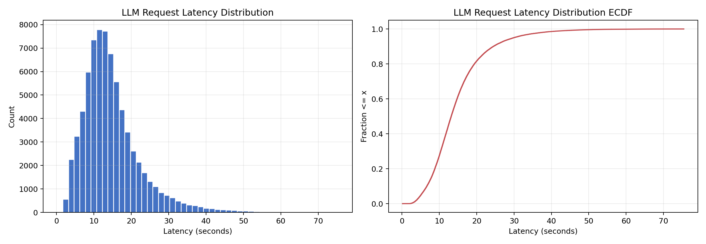
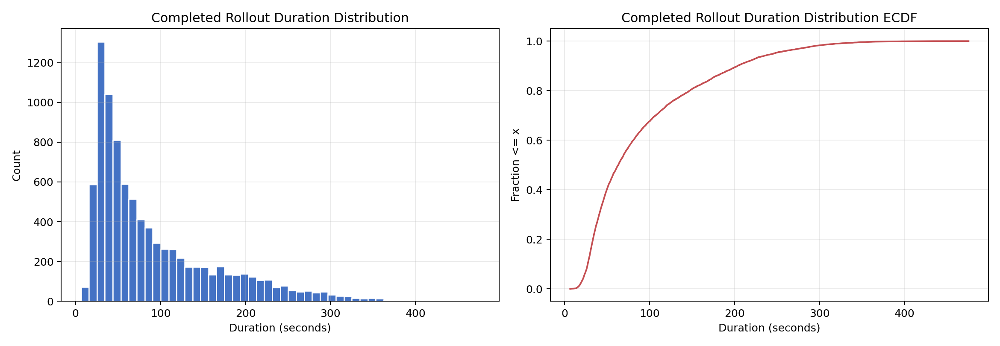
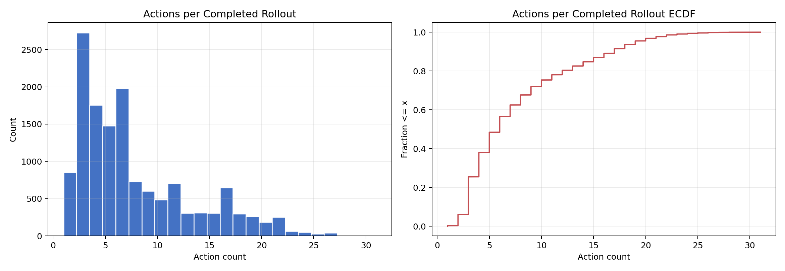
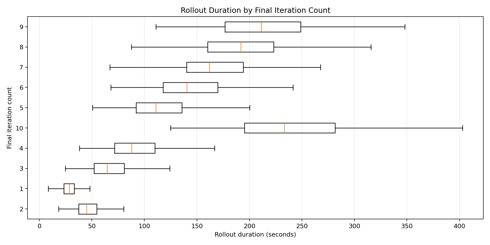
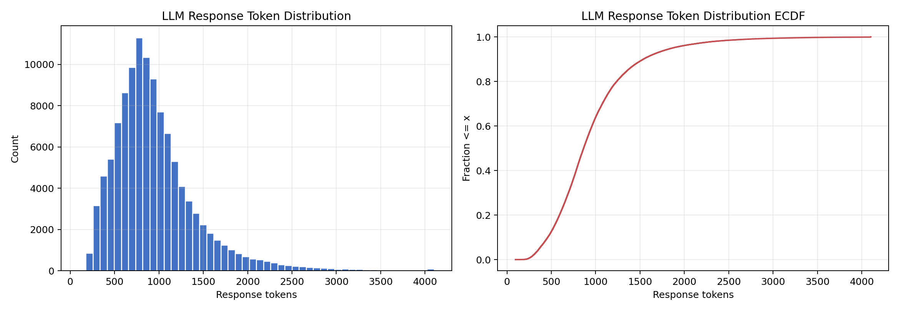
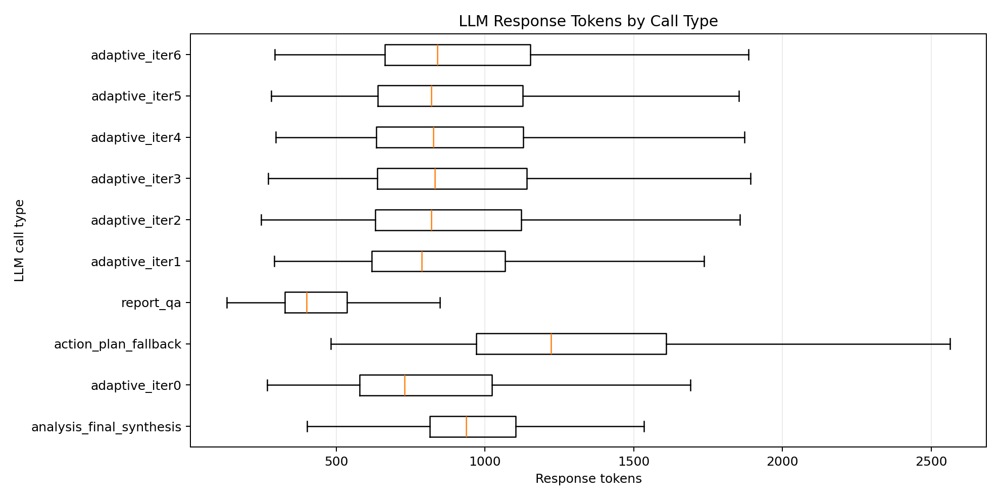
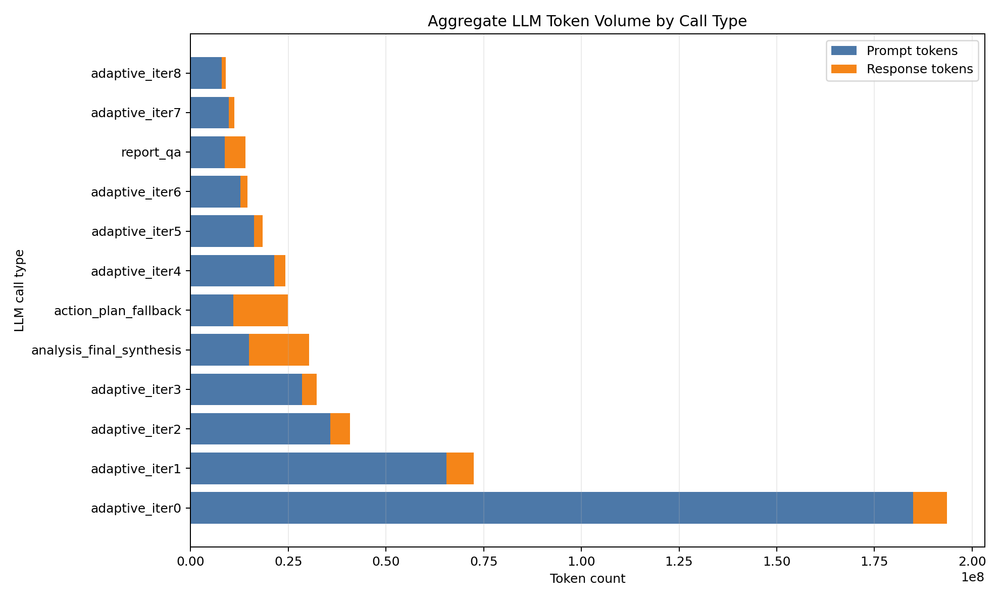
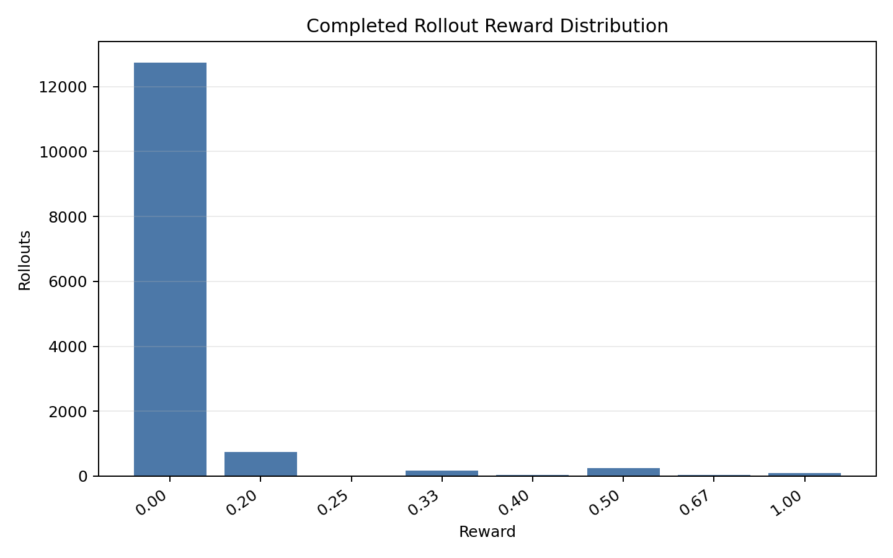
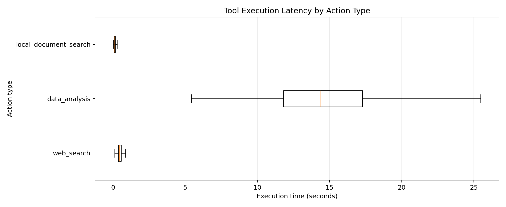
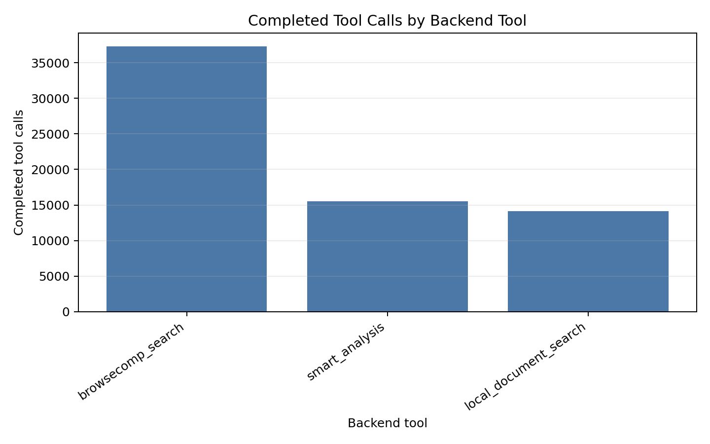

Runtime Analysis Viewer
Run: privacy_agent_qwen3_8b_no_plan_companyctx_planningonly_retrieveonly_v2
This viewer is generated from the saved actor logs and per-rollout session artifacts. Tool timings are exact at the action level; LLM timings are exact overall but only prompt sizes are attributable to specific call types because the actor logs request durations without request IDs under concurrency.
Overview Plots
These are the quickest plots to check for overall throughput shape, rollout duration, and how often the agent keeps iterating.
LLM Latency Distribution
Overall LLM request latency. Exact latency by log_name is not recoverable from the concurrent actor logs.


Rollout Duration Distribution
Completed rollout wall-clock durations, filtered to rollouts with a final report artifact.


Iteration Count Distribution
Final iteration counts across completed rollouts.

Actions Per Rollout
How many tool actions each completed rollout executed before producing a report.


Context + Iteration Behavior
This section is usually the most useful for explaining why the run feels slow. It focuses on prompt size and how each extra iteration adds wall time.
Prompt Tokens by LLM Call Type
Large adaptive prompts dominate; the second panel now shows a median token breakdown by prompt section instead of a fraction.

Rollout Duration by Final Iteration
Completed rollout time split by how many iterations the agent ended up using.


Median Time per Iteration
Median wall time per iteration, split into tool execution versus residual LLM and orchestration time.

LLM Token Usage
These views use the explicit `privacy_agent llm call summary` lines emitted by the rollout adapter. They show response tokens and aggregate token volume by call type and rollout.
Response Token Distribution
Overall response-token distribution across logged privacy-agent LLM calls.


Response Tokens by LLM Call Type
Per-call response-token distribution grouped by log_name.


Token Totals by LLM Call Type
Aggregate prompt versus response token volume for the most expensive call types.


Token Totals by Rollout
Aggregate prompt versus response token volume for the most token-heavy completed rollouts.

Reward Spot Checks
These views recompute reward from the saved report answers against the dataset ground truth, then show a reproducible random sample of rollout reports for manual inspection.
Rollout Reward Distribution
Reward counts recomputed from saved reports and dataset ground truth.


Rollout Reward Stats
| Statistic | Reward |
|---|---|
| count | 14,071 |
| mean | 0.033 |
| median | 0.000 |
| min | 0.000 |
| p90 | 0.000 |
| p95 | 0.200 |
| p99 | 0.500 |
| max | 1.000 |
Reward Distribution
| Reward | Rollouts |
|---|---|
| 0.00 | 12,748 |
| 0.20 | 741 |
| 0.25 | 4 |
| 0.33 | 166 |
| 0.40 | 28 |
| 0.50 | 253 |
| 0.67 | 42 |
| 1.00 | 89 |
DR0001_25cbf112_2bd38a9e | reward=0.000 | hops=0/4
Task: DR0001
Iterations: 2 | Actions: 4 | Duration: 77.14 s
Predicted final answer: NOT_FOUND
Ground-truth final answer: Q2 2022
Question preview: 1. In what year did Chaad complete a residency with the Contemporary Art? 2. In what quarter of (1) did Lee's Market launch its LED lighting retrofit program? 3. What percentage reduction in overall lighting energy expenditure resulted from the initiative launched in (2)? 4 (final). In which quarter did Lee's Market achieve a (3) reduction in transit times?
| Hop | Predicted | Ground Truth | Correct | Match |
|---|---|---|---|---|
| 1 | NOT_FOUND | 2022 | false | 0.000 |
| 2 | NOT_FOUND | Q3 2022 | false | 0.000 |
| 3 | NOT_FOUND | 12% | false | 0.000 |
| 4 | NOT_FOUND | Q2 2022 | false | 0.000 |
Report path: /mnt/llmd/results/exps/alexg/reason/privacy_agent_qwen3_8b_no_plan_companyctx_planningonly_retrieveonly_v2/privacy_agent_runs/DR0001_25cbf112_2bd38a9e/workspace/research_report_20260415_070413.md
# Research Findings: 1. In what year did Chaad complete a residency with the Contemporary Art? 2. In what quarter of (1) did Lee's Market launch its LED lighting retrofit program? 3. What percentage reduction in overall lighting energy expenditure resulted from the initiative launched in (2)? 4 (final). In which quarter did Lee's Market achieve a (3) reduction in transit times? <think> Okay, let's tackle these questions one by one. The user has provided a task with four questions that are interconnected. The challenge is to answer each with a short answer and a justification based on the available evidence, which in this case is empty. First, looking at the original research questions: 1. In what year did Chaad complete a residency with the Contemporary Art? 2. In what quarter of (1) did Lee's Market launch its LED lighting retrofit program? 3. What percentage reduction in overall lighting energy expenditure resulted from the initiative launched in (2)? 4. In which quarter did Lee's Market achieve a (3) reduction in transit times? The sub-questions are the same as the original ones. The available evidence is empty, so there's no data to reference. Since there's no evidence provided, I can't find any answers. Each answer needs to be 1-5 words and a justification. But without any documents or data, the justifications can't cite anything. The rules state that if you can't determine the answer, you should write NOT_FOUND. So for each question, the answer is NOT_FOUND because there's no information given. The justifications would need to mention that the evidence is missing, but since the user specified that if there's no evidence, you should use , but since there are no docs, maybe the justification would just state that. However, the user's rules say to include at least one when supporting evidence exists. Since there's no evidence, perhaps each justification would have or something, but maybe the correct approach is to just say NOT_FOUND with a justificatio
DR0001_25cbf112_a48f80ec | reward=0.000 | hops=0/4
Task: DR0001
Iterations: 10 | Actions: 19 | Duration: 281.05 s
Predicted final answer: NOT_FOUND
Ground-truth final answer: Q2 2022
Question preview: 1. In what year did Chaad complete a residency with the Contemporary Art? 2. In what quarter of (1) did Lee's Market launch its LED lighting retrofit program? 3. What percentage reduction in overall lighting energy expenditure resulted from the initiative launched in (2)? 4 (final). In which quarter did Lee's Market achieve a (3) reduction in transit times?
| Hop | Predicted | Ground Truth | Correct | Match |
|---|---|---|---|---|
| 1 | NOT_FOUND | 2022 | false | 0.000 |
| 2 | NOT_FOUND | Q3 2022 | false | 0.000 |
| 3 | NOT_FOUND | 12% | false | 0.000 |
| 4 | NOT_FOUND | Q2 2022 | false | 0.000 |
Report path: /mnt/llmd/results/exps/alexg/reason/privacy_agent_qwen3_8b_no_plan_companyctx_planningonly_retrieveonly_v2/privacy_agent_runs/DR0001_25cbf112_a48f80ec/workspace/research_report_20260415_102550.md
# Research Findings: 1. In what year did Chaad complete a residency with the Contemporary Art? 2. In what quarter of (1) did Lee's Market launch its LED lighting retrofit program? 3. What percentage reduction in overall lighting energy expenditure resulted from the initiative launched in (2)? 4 (final). In which quarter did Lee's Market achieve a (3) reduction in transit times? <think> Okay, let me try to tackle these questions step by step. The user provided four questions that are interconnected, and I need to answer each with a short answer and justification based on the given context and evidence. However, the available evidence is listed as an empty array, which means there's no data provided to reference. Starting with the first question: "In what year did Chaad complete a residency with the Contemporary Art?" Since there's no evidence provided, I can't find any information about Chaad or the residency. So, the answer should be NOT_FOUND. Moving to the second question: "In what quarter of (1) did Lee's Market launch its LED lighting retrofit program?" The first question's answer is not found, so referencing (1) would be invalid. But maybe the user intended that (1) refers to the year from Q1, which we can't determine. So, this question can't be answered without Q1's data. Hence, NOT_FOUND again. Third question: "What percentage reduction in overall lighting energy expenditure resulted from the initiative launched in (2)?" This depends on Q2's answer, which we already can't determine. So, this is also NOT_FOUND. Fourth question: "In which quarter did Lee's Market achieve a (3) reduction in transit times?" Since Q3's answer is not found, this can't be answered either. All four questions rely on previous answers that aren't available. Therefore, each answer should be NOT_FOUND. The justifications would need to cite the lack of evidence, but since there are no documents, they would mention the absence of provided evidence. However, according to the rules, e
DR0003_4c20816c_831750d2 | reward=0.000 | hops=0/2
Task: DR0003
Iterations: 3 | Actions: 7 | Duration: 70.52 s
Predicted final answer: NOT_FOUND
Ground-truth final answer: the end of Q4 2024
Question preview: 1. What was the renewable energy usage percentage at Lee's Market as of Q1 2024? 2 (final). By when does Lee's Market anticipate achieving a (1) improvement in website performance?
| Hop | Predicted | Ground Truth | Correct | Match |
|---|---|---|---|---|
| 1 | NOT_FOUND | 25% | false | 0.000 |
| 2 | NOT_FOUND | the end of Q4 2024 | false | 0.000 |
Report path: /mnt/llmd/results/exps/alexg/reason/privacy_agent_qwen3_8b_no_plan_companyctx_planningonly_retrieveonly_v2/privacy_agent_runs/DR0003_4c20816c_831750d2/workspace/research_report_20260415_172940.md
# Research Findings: 1. What was the renewable energy usage percentage at Lee's Market as of Q1 2024? 2 (final). By when does Lee's Market anticipate achieving a (1) improvement in website performance? <think> Okay, let's see. The user is asking two questions about Lee's Market. The first is the renewable energy usage percentage as of Q1 2024, and the second is about when they expect a website performance improvement. Looking at the available evidence, there's a document with doc_id "doc_bc99d31d_1776274168" from AI Research Analysis. The content mentions that no relevant documents were found in the vector store, but there are recent findings from different actions. However, the document analysis says there's no data to cite. The quantitative insights section needs numerical data, but since no documents were found, there's no info. The recent findings have some items retrieved, but they aren't in the vector store. So, the answer for both questions would be NOT_FOUND because there's no evidence in the provided documents to answer them. The justification would reference the document stating no relevant documents were found, hence no data available. </think> ANSWER_1: NOT_FOUND JUSTIFICATION_1: No relevant documents found ANSWER_2: NOT_FOUND JUSTIFICATION_2: No relevant documents found ANSWER_FINAL: NOT_FOUND JUSTIFICATION_FINAL: No evidence in documents addresses either sub-question <|im_end|>
DR0008_fdac8c9a_a2b7a6dc | reward=0.000 | hops=0/3
Task: DR0008
Iterations: 1 | Actions: 3 | Duration: 26.09 s
Predicted final answer: NOT_FOUND
Ground-truth final answer: Microsoft
Question preview: 1. What was the vendor compliance rate at MediConn Solutions as of Q3 2025? 2. As of what period was the vendor compliance rate (1)? 3 (final). Which company's gaming revenue is reported as of fiscal (2)?
| Hop | Predicted | Ground Truth | Correct | Match |
|---|---|---|---|---|
| 1 | NOT_FOUND | 45% | false | 0.000 |
| 2 | NOT_FOUND | Q3 2025 | false | 0.000 |
| 3 | NOT_FOUND | Microsoft | false | 0.000 |
Report path: /mnt/llmd/results/exps/alexg/reason/privacy_agent_qwen3_8b_no_plan_companyctx_planningonly_retrieveonly_v2/privacy_agent_runs/DR0008_fdac8c9a_a2b7a6dc/workspace/research_report_20260415_045825.md
# Research Findings: 1. What was the vendor compliance rate at MediConn Solutions as of Q3 2025? 2. As of what period was the vendor compliance rate (1)? 3 (final). Which company's gaming revenue is reported as of fiscal (2)? <think> Okay, let's tackle these questions one by one. First, the original research questions are about MediConn Solutions' vendor compliance rate and related periods. The user provided three sub-questions. Starting with Q1: What was the vendor compliance rate at MediConn Solutions as of Q3 2025? The available evidence is empty, so I can't find any data here. The answer should be NOT_FOUND. Q2 asks for the period mentioned in Q1. Since Q1's answer is not found, this might be a reference to a previous answer, but since there's no data, it's also NOT_FOUND. Q3 is about which company's gaming revenue is reported as of fiscal (2). But (2) refers to Q2's period, which is also not found. Since the company mentioned in the context is MediConn Solutions, but the gaming revenue isn't part of their description. The available evidence doesn't mention gaming revenue, so this would also be NOT_FOUND. All three answers are missing evidence, so each should be NOT_FOUND. The final answer combines them, but since all are not found, the final is NOT_FOUND. </think> ANSWER_1: NOT_FOUND JUSTIFICATION_1: No evidence provided ANSWER_2: NOT_FOUND JUSTIFICATION_2: No evidence provided ANSWER_3: NOT_FOUND JUSTIFICATION_3: No evidence provided ANSWER_FINAL: NOT_FOUND JUSTIFICATION_FINAL: All sub-questions lack supporting evidence <|im_end|>
DR0010_0db8a3e5_fefd4b37 | reward=0.000 | hops=0/5
Task: DR0010
Iterations: 3 | Actions: 6 | Duration: 63.46 s
Predicted final answer: NOT_FOUND
Ground-truth final answer: Colombia
Question preview: 1. What percentage of MediConn Solutions' case study downloads came from healthcare professionals? 2. What month had (1) coverage of country of birth information for secondary schools? 3. What percentage of children in state-funded secondary schools in England were born inside the UK in (2)? 4. What year did MediConn Solutions achieve a client retention rate of (3)? 5 (final). In which country was the Spanish translation of Freedom's Captives published in (4)?
| Hop | Predicted | Ground Truth | Correct | Match |
|---|---|---|---|---|
| 1 | NOT_FOUND | 75% | false | 0.000 |
| 2 | NOT_FOUND | January 2018 | false | 0.000 |
| 3 | NOT_FOUND | 90% | false | 0.000 |
| 4 | NOT_FOUND | 2023 | false | 0.000 |
| 5 | Colombia | false | 0.000 |
Report path: /mnt/llmd/results/exps/alexg/reason/privacy_agent_qwen3_8b_no_plan_companyctx_planningonly_retrieveonly_v2/privacy_agent_runs/DR0010_0db8a3e5_fefd4b37/workspace/research_report_20260415_140433.md
# Research Findings: 1. What percentage of MediConn Solutions' case study downloads came from healthcare professionals? 2. What month had (1) coverage of country of birth information for secondary schools? 3. What percentage of children in state-funded secondary schools in England were born inside the UK in (2)? 4. What year did MediConn Solutions achieve a client retention rate of (3)? 5 (final). In which country was the Spanish translation of Freedom's Captives published in (4)? <think> Okay, let's tackle these questions step by step. The user provided five numbered questions that reference each other, so I need to make sure each answer is based on the previous ones if they are linked. Starting with the first question: Q1 asks for the percentage of MediConn Solutions' case study downloads from healthcare professionals. The available evidence is empty, so I can't find any data here. The answer would be NOT_FOUND because there's no information provided. Moving to Q2: It asks for the month with coverage of country of birth information for secondary schools. Again, no evidence is given, so this is also NOT_FOUND. But wait, maybe there's a connection to Q1? No, since Q1 is about MediConn's downloads and Q2 is about schools. Still no info here. Q3 asks for the percentage of children in state-funded secondary schools in England born in the UK in the month mentioned in Q2. Since Q2's answer is unknown, this question can't be answered either. It's dependent on Q2's answer, which is missing. Q4 is about the year MediConn achieved a client retention rate of (3). Since Q3's answer isn't available, this depends on Q3's data, which isn't found. So Q4 is also NOT_FOUND. Finally, Q5 asks for the country where the Spanish translation of Freedom's Captives was published in the year mentioned in Q4. This is dependent on Q4's answer, which is missing. So Q5 can't be determined. Since all the questions are interconnected and none of the evidence is present, all answers should b
DR0026_080d67f1_c2b667d2 | reward=0.200 | hops=1/5
Task: DR0026
Iterations: 2 | Actions: 2 | Duration: 88.42 s
Predicted final answer: NOT_FOUND
Ground-truth final answer: 30%
Question preview: 1. According to the Corporate Transparency Act information, until what year must domestic and foreign entities formed or registered before January 1, 2024, file their initial beneficial ownership information report with FinCEN? 2. What is the title of the customer service analysis report covering the first months of (1)? 3. What university's innovation campus building was completed in (2)? 4. What year is (3)'s budget of $2.06 billion associated with? 5 (final). What percentage of respondents preferred online shopping with home delivery in the survey conducted in June (4)?
| Hop | Predicted | Ground Truth | Correct | Match |
|---|---|---|---|---|
| 1 | 2025 | 2025 | true | 1.000 |
| 2 | Frequently Asked Questions | February 2025 | false | 0.000 |
| 3 | NOT_FOUND | Virginia Tech | false | 0.000 |
| 4 | NOT_FOUND | 2023 | false | 0.000 |
| 5 | NOT_FOUND | 30% | false | 0.000 |
Report path: /mnt/llmd/results/exps/alexg/reason/privacy_agent_qwen3_8b_no_plan_companyctx_planningonly_retrieveonly_v2/privacy_agent_runs/DR0026_080d67f1_c2b667d2/workspace/research_report_20260415_075104.md
# Research Findings: 1. According to the Corporate Transparency Act information, until what year must domestic and foreign entities formed or registered before January 1, 2024, file their initial beneficial ownership information report with FinCEN? 2. What is the title of the customer service analysis report covering the first months of (1)? 3. What university's innovation campus building was completed in (2)? 4. What year is (3)'s budget of $2.06 billion associated with? 5 (final). What percentage of respondents preferred online shopping with home delivery in the survey conducted in June (4)? <think> Okay, let's tackle these questions one by one. Starting with Q1: the Corporate Transparency Act requires entities formed before January 1, 2024, to file their initial BOI report. The third document mentions that companies formed before January 1, 2024, had until January 1, 2025. So the answer is 2025. For Q2, the title of the customer service analysis report covering the first months of (1), which is 2025. The first document's date is March 26, 2025, but the title isn't directly mentioned. Wait, the second document's title is "Beneficial Ownership Information Reporting Rule Fact Sheet" but that's from 2022. The third document's title is "Corporate Transparency Act: Private Companies Will Soon Be a Little Less Private" from May 2023. Hmm, maybe the first document's title is "Frequently Asked Questions" from March 2023. But the question refers to the first months of (1), which is 2025. Wait, the first document's date is March 2023, but it talks about the interim final rule from March 26, 2025. Maybe the report mentioned in Q2 is the "Frequently Asked Questions" document? Not sure, but I need to check. Alternatively, maybe the answer is the "Private Companies Will Soon Be a Little Less Private" report from May 2023. But the user is asking for the title of the report covering the first months of (1), which is 2025. Wait, perhaps the answer is the "Frequently Asked Quest
DR0073_fe2c0014_633b901a | reward=0.000 | hops=0/2
Task: DR0073
Iterations: 2 | Actions: 4 | Duration: 62.15 s
Predicted final answer: NOT_FOUND
Ground-truth final answer: 12%
Question preview: 1. How many weekends did The Lord of the Rings: The Return of the King spend in the top 10 domestically? 2 (final). What aspect of the 2023 vehicle performance saw a (1)% improvement year over year?
| Hop | Predicted | Ground Truth | Correct | Match |
|---|---|---|---|---|
| 1 | NOT_FOUND | 12 | false | 0.000 |
| 2 | NOT_FOUND | 12% | false | 0.000 |
Report path: /mnt/llmd/results/exps/alexg/reason/privacy_agent_qwen3_8b_no_plan_companyctx_planningonly_retrieveonly_v2/privacy_agent_runs/DR0073_fe2c0014_633b901a/workspace/research_report_20260415_033847.md
# Research Findings: 1. How many weekends did The Lord of the Rings: The Return of the King spend in the top 10 domestically? 2 (final). What aspect of the 2023 vehicle performance saw a (1)% improvement year over year? <think> Okay, let's tackle these questions one by one. First, the original research question has two parts. The first one is about how many weekends The Lord of the Rings: The Return of the King spent in the top 10 domestically. I need to find this number. But looking at the available evidence, there's nothing provided here. The context given is about Elexion Automotive, which is unrelated to movie box office data. So, there's no document to reference for this question. Therefore, the answer should be NOT_FOUND. The second question is about what aspect of the 2023 vehicle performance saw a 1% improvement year over year. Again, the available evidence is the company description of Elexion Automotive, which mentions sustainability, user-centric technology, and cross-border compliance. However, there's no specific data on vehicle performance metrics like battery efficiency, acceleration, range, etc. The company's focus areas don't provide specific performance aspects with percentage improvements. So, there's no evidence to answer this either. Hence, this answer should also be NOT_FOUND. Since both questions lack supporting evidence from the provided documents, the final answer will indicate that both sub-questions couldn't be answered with the given information. I need to make sure I follow the rules strictly: short answers, justifications with DOC IDs, and if evidence isn't there, use NOT_FOUND. Also, the final answer should combine the sub-answers, explaining that the evidence was missing for both. </think> ANSWER_1: NOT_FOUND JUSTIFICATION_1: No evidence provided about movie box office data. ANSWER_2: NOT_FOUND JUSTIFICATION_2: No performance metrics or improvement data cited in the company description. ANSWER_FINAL: NOT_FOUND JU
DR0099_c4742644_37bfe7d5 | reward=0.500 | hops=1/2
Task: DR0099
Iterations: 5 | Actions: 9 | Duration: 117.99 s
Predicted final answer: NOT_FOUND
Ground-truth final answer: Elexion
Question preview: 1. What year is the penultimate year of the Muppet Babies broadcast run? 2 (final). Which company sold exactly (1) electric vehicles?
| Hop | Predicted | Ground Truth | Correct | Match |
|---|---|---|---|---|
| 1 | 1990 | 1990 | true | 1.000 |
| 2 | NOT_FOUND | Elexion | false | 0.000 |
Report path: /mnt/llmd/results/exps/alexg/reason/privacy_agent_qwen3_8b_no_plan_companyctx_planningonly_retrieveonly_v2/privacy_agent_runs/DR0099_c4742644_37bfe7d5/workspace/research_report_20260415_055021.md
# Research Findings: 1. What year is the penultimate year of the Muppet Babies broadcast run? 2 (final). Which company sold exactly (1) electric vehicles? <think> Okay, let me tackle these questions step by step. First, for the Muppet Babies broadcast run's penultimate year. I know that Muppet Babies aired from 1985 to 1991. The penultimate year would be the second-to-last year. Since it ended in 1991, the penultimate year should be 1990. But wait, I need to confirm the exact years. If the show ran from 1985 to 1991, inclusive, then the last year is 1991, so the penultimate is 1990. That seems right. Next, the company that sold exactly one electric vehicle. The given company is Elexion Automotive, which is in the electric vehicle industry. However, the description mentions they have $350M - $500M in revenue and 1900 employees. But the question is about a company that sold exactly one EV. The available evidence doesn't specify how many vehicles they sold. There's no mention of sales numbers, so maybe the answer is NOT_FOUND. But wait, the task context says the company is in the EV industry, but does that mean they sold exactly one? Probably not. Without specific data, I can't confirm. So the answer might be NOT_FOUND for Q2. But the user provided no evidence, so for the second question, there's no info. So the answer would be NOT_FOUND. But the sub-question Q2 says "Which company sold exactly (1) electric vehicles?" with the company given being Elexion Automotive. But the description doesn't say they sold any EVs. So maybe the answer is NOT_FOUND. So for Q1, answer is 1990, and Q2 is NOT_FOUND. Then the final answer would combine those, but since Q2 is not found, maybe the final answer is not possible. But according to the instructions, if a question can't be determined, write NOT_FOUND. So I need to check each answer accordingly. </think> ANSWER_1: 1990 JUSTIFICATION_1: Muppet Babies aired 1985-1991, making 1990 the penultimate year ANSWER_2: NOT_FOUND JU
Tool Timing
These plots use per-action execution times stored in each rollout's final action plan, so this breakdown is much more precise than the text logs alone.
Tool Latency by Action Type
Distribution of per-action execution time using action categories from the final action plan.


Tool Latency by Backend
Distribution of execution time grouped by the backend tool actually used.

Tool Counts by Action Type
Volume of completed tool calls by action type.

Tool Counts by Backend
Volume of completed tool calls by backend tool.


Summary Tables
Counts
| Metric | Value |
|---|---|
| llm_requests | 114,309 |
| llm_call_records | 114,289 |
| prompt_records | 39,246 |
| reward_records | 14,071 |
| rollouts_all | 14,099 |
| rollouts_completed_with_report | 14,071 |
| actions_completed_with_report | 106,338 |
| iteration_records_completed_with_report | 59,171 |
| completed_rollouts_per_s | 0.254 |
LLM Request Latency
| Statistic | Seconds |
|---|---|
| count | 114,309 |
| mean | 14.94 |
| median | 13.41 |
| min | 0.190 |
| p90 | 24.50 |
| p95 | 29.86 |
| p99 | 42.83 |
| max | 75.42 |
Logged Prompt Tokens
| Statistic | Tokens |
|---|---|
| count | 39,246 |
| mean | 14,296.44 |
| median | 12,454.00 |
| min | 4,096 |
| p90 | 23,649.00 |
| p95 | 25,951.00 |
| p99 | 29,100.00 |
| max | 40,175 |
Logged Response Tokens
| Statistic | Tokens |
|---|---|
| count | 114,289 |
| mean | 956.58 |
| median | 864 |
| min | 96 |
| p90 | 1,537.00 |
| p95 | 1,864.00 |
| p99 | 2,726.12 |
| max | 4,102 |
Logged Total Tokens
| Statistic | Tokens |
|---|---|
| count | 114,289 |
| mean | 6,725.23 |
| median | 2,622 |
| min | 589 |
| p90 | 18,279.00 |
| p95 | 22,781.00 |
| p99 | 28,647.60 |
| max | 37,727 |
Rollout Reward
| Statistic | Reward |
|---|---|
| count | 14,071 |
| mean | 0.033 |
| median | 0.000 |
| min | 0.000 |
| p90 | 0.000 |
| p95 | 0.200 |
| p99 | 0.500 |
| max | 1.000 |
Completed Rollout Duration
| Statistic | Seconds |
|---|---|
| count | 14,071 |
| mean | 103.11 |
| median | 70.50 |
| min | 0.000 |
| p90 | 233.33 |
| p95 | 277.78 |
| p99 | 352.17 |
| max | 519.70 |
LLM Token Usage by Call Type
| Log name | call_count | captured_call_count | prompt_tokens | response_tokens | total_tokens | mean_prompt_tokens | mean_response_tokens |
|---|---|---|---|---|---|---|---|
| adaptive_iter0 | 14,229 | 14,229 | 264,413,199 | 12,405,782 | 276,818,981 | 18,582.70 | 871.87 |
| adaptive_iter1 | 11,285 | 11,285 | 95,618,285 | 10,247,891 | 105,866,176 | 8,473.04 | 908.10 |
| adaptive_iter2 | 8,228 | 8,228 | 56,208,872 | 7,700,405 | 63,909,277 | 6,831.41 | 935.88 |
| adaptive_iter3 | 6,430 | 6,430 | 46,649,412 | 6,084,413 | 52,733,825 | 7,254.96 | 946.25 |
| analysis_final_synthesis | 25,800 | 0 | 25,155,127 | 26,154,434 | 51,309,561 | 975.00 | 1,013.74 |
| adaptive_iter4 | 5,082 | 5,082 | 37,521,262 | 4,767,937 | 42,289,199 | 7,383.17 | 938.20 |
| action_plan_fallback | 14,198 | 14,198 | 15,689,622 | 20,136,575 | 35,826,197 | 1,105.06 | 1,418.27 |
| adaptive_iter5 | 4,075 | 4,075 | 29,113,514 | 3,810,878 | 32,924,392 | 7,144.42 | 935.18 |
| adaptive_iter6 | 3,359 | 3,359 | 23,966,777 | 3,181,678 | 27,148,455 | 7,135.09 | 947.21 |
| adaptive_iter7 | 2,778 | 2,778 | 19,848,926 | 2,613,779 | 22,462,705 | 7,145.04 | 940.89 |
| report_qa | 14,061 | 0 | 13,247,489 | 7,563,236 | 20,810,725 | 942.14 | 537.89 |
| adaptive_iter8 | 2,325 | 2,325 | 16,785,762 | 2,184,210 | 18,969,972 | 7,219.68 | 939.45 |
LLM Token Usage by Rollout
| Rollout | call_count | captured_call_count | prompt_tokens | response_tokens | total_tokens | mean_prompt_tokens | mean_response_tokens |
|---|---|---|---|---|---|---|---|
| DR0010_0db8a3e5_ff8f0827 | 23 | 11 | 188,552 | 29,413 | 217,965 | 8,197.91 | 1,278.83 |
| DR0026_080d67f1_bcac6964 | 20 | 11 | 172,168 | 25,897 | 198,065 | 8,608.40 | 1,294.85 |
| DR0036_feec6577_cfaf476a | 19 | 12 | 171,032 | 21,096 | 192,128 | 9,001.68 | 1,110.32 |
| DR0036_feec6577_6d59562b | 18 | 11 | 173,997 | 17,719 | 191,716 | 9,666.50 | 984.39 |
| DR0010_0db8a3e5_f6994174 | 18 | 11 | 159,315 | 25,446 | 184,761 | 8,850.83 | 1,413.67 |
| DR0026_080d67f1_4694fc31 | 17 | 11 | 163,936 | 20,410 | 184,346 | 9,643.29 | 1,200.59 |
| DR0026_080d67f1_202d1212 | 16 | 11 | 161,627 | 22,371 | 183,998 | 10,101.69 | 1,398.19 |
| DR0010_0db8a3e5_79013c18 | 23 | 11 | 158,474 | 25,205 | 183,679 | 6,890.17 | 1,095.87 |
| DR0044_85ea1c50_af6043d3 | 15 | 11 | 162,169 | 21,249 | 183,418 | 10,811.27 | 1,416.60 |
| DR0026_080d67f1_61ebd4b3 | 15 | 11 | 158,834 | 23,231 | 182,065 | 10,588.93 | 1,548.73 |
| DR0010_0db8a3e5_35fe1585 | 19 | 11 | 159,747 | 21,959 | 181,706 | 8,407.74 | 1,155.74 |
| DR0010_0db8a3e5_8dec2891 | 21 | 11 | 159,315 | 22,089 | 181,404 | 7,586.43 | 1,051.86 |
Completed Action Execution
| Statistic | Seconds |
|---|---|
| count | 106,338 |
| mean | 4.079 |
| median | 0.465 |
| min | 0.003 |
| p90 | 15.55 |
| p95 | 18.63 |
| p99 | 26.68 |
| max | 103.79 |
Iteration Count Distribution
| Final iteration | Rollouts |
|---|---|
| 1 | 2,908 |
| 2 | 3,010 |
| 3 | 1,786 |
| 4 | 1,322 |
| 5 | 999 |
| 6 | 716 |
| 7 | 580 |
| 8 | 436 |
| 9 | 382 |
| 10 | 1,932 |
Prompt Count by Log Name
| Log name | Prompt summaries |
|---|---|
| adaptive_iter0 | 13,953 |
| adaptive_iter1 | 7,249 |
| adaptive_iter2 | 4,138 |
| adaptive_iter3 | 3,415 |
| adaptive_iter4 | 2,776 |
| adaptive_iter5 | 2,154 |
| adaptive_iter6 | 1,776 |
| adaptive_iter7 | 1,434 |
| adaptive_iter8 | 1,256 |
| adaptive_iter9 | 1,025 |
| analysis_synthesis | 60 |
| analysis_final_synthesis | 10 |
Action Timing by Type
| Action type | count | mean | median | p90 | p95 | p99 | max |
|---|---|---|---|---|---|---|---|
| web_search | 57,278 | 0.476 | 0.457 | 0.683 | 0.785 | 1.165 | 7.971 |
| data_analysis | 25,736 | 15.67 | 14.63 | 21.86 | 25.53 | 36.87 | 103.79 |
| local_document_search | 23,324 | 0.142 | 0.121 | 0.218 | 0.263 | 0.389 | 5.002 |
Action Timing by Backend Tool
| Backend | count | mean | median | p90 | p95 | p99 | max |
|---|---|---|---|---|---|---|---|
| browsecomp_search | 57,278 | 0.476 | 0.457 | 0.683 | 0.785 | 1.165 | 7.971 |
| smart_analysis | 25,736 | 15.67 | 14.63 | 21.86 | 25.53 | 36.87 | 103.79 |
| local_document_search | 23,324 | 0.142 | 0.121 | 0.218 | 0.263 | 0.389 | 5.002 |
Preview: rollouts.csv
| rollout_id | has_report | report_path | start_timestamp | end_timestamp | duration_s | current_iteration | max_iterations | total_actions | completed_actions | failed_actions | pending_actions | tool_exec_time_s | non_tool_time_s |
|---|---|---|---|---|---|---|---|---|---|---|---|---|---|
| DR0001_06a7f3db_004eec27 | true | /mnt/llmd/results/exps/alexg/reason/privacy_agent_qwen3_8b_no_plan_companyctx_planningonly_retrieveonly_v2/privacy_agent_runs/DR0001_06a7f3db_004eec27/workspace/research_report_20260415_043035.md | 2026-04-15T04:30:10.996663 | 2026-04-15T04:30:35 | 24.00 | 1 | 10 | 3 | 3 | 0 | 0 | 8.398 | 15.61 |
| DR0001_06a7f3db_010f1196 | true | /mnt/llmd/results/exps/alexg/reason/privacy_agent_qwen3_8b_no_plan_companyctx_planningonly_retrieveonly_v2/privacy_agent_runs/DR0001_06a7f3db_010f1196/workspace/research_report_20260415_072506.md | 2026-04-15T07:23:25.086913 | 2026-04-15T07:25:06 | 100.91 | 6 | 10 | 11 | 11 | 0 | 0 | 30.49 | 70.42 |
| DR0001_06a7f3db_01e6a31f | true | /mnt/llmd/results/exps/alexg/reason/privacy_agent_qwen3_8b_no_plan_companyctx_planningonly_retrieveonly_v2/privacy_agent_runs/DR0001_06a7f3db_01e6a31f/workspace/research_report_20260415_044617.md | 2026-04-15T04:45:48.307404 | 2026-04-15T04:46:17 | 28.69 | 1 | 10 | 3 | 3 | 0 | 0 | 11.96 | 16.73 |
| DR0001_06a7f3db_0282b1e4 | true | /mnt/llmd/results/exps/alexg/reason/privacy_agent_qwen3_8b_no_plan_companyctx_planningonly_retrieveonly_v2/privacy_agent_runs/DR0001_06a7f3db_0282b1e4/workspace/research_report_20260415_093947.md | 2026-04-15T09:38:09.796438 | 2026-04-15T09:39:47 | 97.20 | 6 | 10 | 8 | 8 | 0 | 0 | 1.813 | 95.39 |
| DR0001_06a7f3db_02b0b5c8 | true | /mnt/llmd/results/exps/alexg/reason/privacy_agent_qwen3_8b_no_plan_companyctx_planningonly_retrieveonly_v2/privacy_agent_runs/DR0001_06a7f3db_02b0b5c8/workspace/research_report_20260415_100145.md | 2026-04-15T09:59:15.015533 | 2026-04-15T10:01:45 | 149.98 | 9 | 10 | 13 | 13 | 0 | 0 | 43.83 | 106.16 |
| DR0001_06a7f3db_02c2cbee | true | /mnt/llmd/results/exps/alexg/reason/privacy_agent_qwen3_8b_no_plan_companyctx_planningonly_retrieveonly_v2/privacy_agent_runs/DR0001_06a7f3db_02c2cbee/workspace/research_report_20260415_161226.md | 2026-04-15T16:11:25.950929 | 2026-04-15T16:12:26 | 60.05 | 4 | 10 | 7 | 7 | 0 | 0 | 10.69 | 49.36 |
| DR0001_06a7f3db_03000fe6 | true | /mnt/llmd/results/exps/alexg/reason/privacy_agent_qwen3_8b_no_plan_companyctx_planningonly_retrieveonly_v2/privacy_agent_runs/DR0001_06a7f3db_03000fe6/workspace/research_report_20260415_075415.md | 2026-04-15T07:50:59.455495 | 2026-04-15T07:54:15 | 195.54 | 10 | 10 | 17 | 16 | 0 | 1 | 60.14 | 135.41 |
| DR0001_06a7f3db_031704c1 | true | /mnt/llmd/results/exps/alexg/reason/privacy_agent_qwen3_8b_no_plan_companyctx_planningonly_retrieveonly_v2/privacy_agent_runs/DR0001_06a7f3db_031704c1/workspace/research_report_20260415_142637.md | 2026-04-15T14:25:26.922495 | 2026-04-15T14:26:37 | 70.08 | 3 | 10 | 6 | 6 | 0 | 0 | 15.37 | 54.71 |
| DR0001_06a7f3db_034118d0 | true | /mnt/llmd/results/exps/alexg/reason/privacy_agent_qwen3_8b_no_plan_companyctx_planningonly_retrieveonly_v2/privacy_agent_runs/DR0001_06a7f3db_034118d0/workspace/research_report_20260415_050636.md | 2026-04-15T05:05:57.472625 | 2026-04-15T05:06:36 | 38.53 | 1 | 10 | 3 | 3 | 0 | 0 | 21.21 | 17.31 |
| DR0001_06a7f3db_044a1ce6 | true | /mnt/llmd/results/exps/alexg/reason/privacy_agent_qwen3_8b_no_plan_companyctx_planningonly_retrieveonly_v2/privacy_agent_runs/DR0001_06a7f3db_044a1ce6/workspace/research_report_20260415_145822.md | 2026-04-15T14:55:29.458315 | 2026-04-15T14:58:22 | 172.54 | 10 | 10 | 17 | 16 | 0 | 1 | 60.60 | 111.94 |
| DR0001_06a7f3db_04c83886 | true | /mnt/llmd/results/exps/alexg/reason/privacy_agent_qwen3_8b_no_plan_companyctx_planningonly_retrieveonly_v2/privacy_agent_runs/DR0001_06a7f3db_04c83886/workspace/research_report_20260415_103153.md | 2026-04-15T10:31:14.952918 | 2026-04-15T10:31:53 | 38.05 | 1 | 10 | 3 | 3 | 0 | 0 | 18.24 | 19.81 |
| DR0001_06a7f3db_050ef706 | true | /mnt/llmd/results/exps/alexg/reason/privacy_agent_qwen3_8b_no_plan_companyctx_planningonly_retrieveonly_v2/privacy_agent_runs/DR0001_06a7f3db_050ef706/workspace/research_report_20260415_160015.md | 2026-04-15T15:59:48.576134 | 2026-04-15T16:00:15 | 26.42 | 1 | 10 | 3 | 3 | 0 | 0 | 11.46 | 14.96 |
| DR0001_06a7f3db_053c34e0 | true | /mnt/llmd/results/exps/alexg/reason/privacy_agent_qwen3_8b_no_plan_companyctx_planningonly_retrieveonly_v2/privacy_agent_runs/DR0001_06a7f3db_053c34e0/workspace/research_report_20260415_062209.md | 2026-04-15T06:21:31.850304 | 2026-04-15T06:22:09 | 37.15 | 1 | 10 | 3 | 3 | 0 | 0 | 18.18 | 18.97 |
| DR0001_06a7f3db_059d2c44 | true | /mnt/llmd/results/exps/alexg/reason/privacy_agent_qwen3_8b_no_plan_companyctx_planningonly_retrieveonly_v2/privacy_agent_runs/DR0001_06a7f3db_059d2c44/workspace/research_report_20260415_113407.md | 2026-04-15T11:33:06.963912 | 2026-04-15T11:34:07 | 60.04 | 2 | 10 | 5 | 5 | 0 | 0 | 24.88 | 35.16 |
| DR0001_06a7f3db_05b906f9 | true | /mnt/llmd/results/exps/alexg/reason/privacy_agent_qwen3_8b_no_plan_companyctx_planningonly_retrieveonly_v2/privacy_agent_runs/DR0001_06a7f3db_05b906f9/workspace/research_report_20260415_032619.md | 2026-04-15T03:25:30.747177 | 2026-04-15T03:26:19 | 48.25 | 3 | 10 | 6 | 6 | 0 | 0 | 10.99 | 37.26 |
Preview: actions.csv
| rollout_id | has_report | action_id | action_type | backend_tool | status | execution_time_s | iteration_completed | completion_time | created_from_research_step | preferred_tool |
|---|---|---|---|---|---|---|---|---|---|---|
| DR0001_06a7f3db_004eec27 | true | fallback_action_0 | local_document_search | local_document_search | completed | 0.059 | 0 | 2026-04-15T04:30:11.057182 | fallback_generation | LocalFileSearchTool |
| DR0001_06a7f3db_004eec27 | true | fallback_action_1 | web_search | browsecomp_search | completed | 0.444 | 0 | 2026-04-15T04:30:11.500946 | fallback_generation | BrowseCompSearchTool |
| DR0001_06a7f3db_004eec27 | true | fallback_action_2 | data_analysis | smart_analysis | completed | 7.895 | 0 | 2026-04-15T04:30:19.396657 | fallback_generation | SmartAnalysisTool |
| DR0001_06a7f3db_010f1196 | true | fallback_action_0 | local_document_search | local_document_search | completed | 0.078 | 0 | 2026-04-15T07:23:25.167293 | fallback_generation | LocalFileSearchTool |
| DR0001_06a7f3db_010f1196 | true | fallback_action_1 | web_search | browsecomp_search | completed | 0.494 | 0 | 2026-04-15T07:23:25.661471 | fallback_generation | BrowseCompSearchTool |
| DR0001_06a7f3db_010f1196 | true | fallback_action_2 | data_analysis | smart_analysis | completed | 18.91 | 0 | 2026-04-15T07:23:44.574146 | fallback_generation | SmartAnalysisTool |
| DR0001_06a7f3db_010f1196 | true | adaptive_0_local_document_search_search_for_unpr_0 | local_document_search | local_document_search | completed | 0.226 | 1 | 2026-04-15T07:23:56.163417 | LocalFileSearchTool | |
| DR0001_06a7f3db_010f1196 | true | adaptive_0_web_search_find_official_c_1 | web_search | browsecomp_search | completed | 0.488 | 1 | 2026-04-15T07:23:56.651205 | BrowseCompSearchTool | |
| DR0001_06a7f3db_010f1196 | true | adaptive_1_local_document_search_search_for_inte_1 | local_document_search | local_document_search | completed | 0.115 | 2 | 2026-04-15T07:24:10.116226 | LocalFileSearchTool | |
| DR0001_06a7f3db_010f1196 | true | adaptive_2_web_search_search_for_the__0 | web_search | browsecomp_search | completed | 0.654 | 3 | 2026-04-15T07:24:26.303778 | BrowseCompSearchTool | |
| DR0001_06a7f3db_010f1196 | true | adaptive_2_local_document_search_search_for_fsma_1 | local_document_search | local_document_search | completed | 0.098 | 3 | 2026-04-15T07:24:26.402592 | LocalFileSearchTool | |
| DR0001_06a7f3db_010f1196 | true | adaptive_3_web_search_search_for_lee'_0 | web_search | browsecomp_search | completed | 0.321 | 4 | 2026-04-15T07:24:48.550641 | browsecomp_search | |
| DR0001_06a7f3db_010f1196 | true | adaptive_3_data_analysis_analyze_quarter_1 | data_analysis | smart_analysis | completed | 8.993 | 4 | 2026-04-15T07:24:48.229139 | SmartAnalysisTool | |
| DR0001_06a7f3db_010f1196 | true | adaptive_4_local_document_search_search_for_inte_0 | local_document_search | local_document_search | completed | 0.113 | 5 | 2026-04-15T07:24:55.841362 | LocalFileSearchTool | |
| DR0001_06a7f3db_01e6a31f | true | fallback_action_0 | web_search | browsecomp_search | completed | 0.562 | 0 | 2026-04-15T04:45:48.871471 | fallback_generation | BrowseCompSearchTool |
Preview: iterations.csv
| rollout_id | has_report | iteration | action_count | wall_time_s | tool_time_s | non_tool_time_s |
|---|---|---|---|---|---|---|
| DR0001_06a7f3db_004eec27 | true | 0 | 3 | 8.400 | 8.398 | 0.002 |
| DR0001_06a7f3db_010f1196 | true | 0 | 3 | 19.49 | 19.48 | 0.002 |
| DR0001_06a7f3db_010f1196 | true | 1 | 2 | 12.08 | 0.714 | 11.36 |
| DR0001_06a7f3db_010f1196 | true | 2 | 1 | 13.47 | 0.115 | 13.35 |
| DR0001_06a7f3db_010f1196 | true | 3 | 2 | 16.29 | 0.753 | 15.53 |
| DR0001_06a7f3db_010f1196 | true | 4 | 2 | 22.15 | 9.314 | 12.83 |
| DR0001_06a7f3db_010f1196 | true | 5 | 1 | 7.291 | 0.113 | 7.177 |
| DR0001_06a7f3db_01e6a31f | true | 0 | 3 | 11.97 | 11.96 | 0.003 |
| DR0001_06a7f3db_0282b1e4 | true | 0 | 3 | 0.660 | 0.646 | 0.015 |
| DR0001_06a7f3db_0282b1e4 | true | 1 | 1 | 26.82 | 0.186 | 26.64 |
| DR0001_06a7f3db_0282b1e4 | true | 2 | 1 | 15.16 | 0.468 | 14.69 |
| DR0001_06a7f3db_0282b1e4 | true | 3 | 1 | 14.60 | 0.095 | 14.51 |
| DR0001_06a7f3db_0282b1e4 | true | 4 | 1 | 11.01 | 0.339 | 10.67 |
| DR0001_06a7f3db_0282b1e4 | true | 5 | 1 | 9.919 | 0.079 | 9.840 |
| DR0001_06a7f3db_02b0b5c8 | true | 0 | 3 | 17.30 | 17.30 | 0.002 |
Preview: prompt_records.csv
| timestamp | log_name | prompt_tokens | prompt_chars | latest_findings_tokens | latest_findings_chars | instructions_tokens | planning_context_tokens | task_definition_tokens | documents_or_evidence_tokens | reporting_context_tokens | other_tokens |
|---|---|---|---|---|---|---|---|---|---|---|---|
| 2026-04-15T02:44:59.483000 | adaptive_iter0 | 9,216 | 37,264 | 8,998 | 36,246 | 0 | 17 | 45 | 0 | 0 | 129 |
| 2026-04-15T02:45:01.748000 | adaptive_iter0 | 16,805 | 69,433 | 16,593 | 68,477 | 0 | 17 | 44 | 0 | 0 | 123 |
| 2026-04-15T02:45:03.141000 | adaptive_iter0 | 28,026 | 101,520 | 27,784 | 100,400 | 0 | 17 | 75 | 0 | 0 | 123 |
| 2026-04-15T02:45:04.306000 | adaptive_iter0 | 10,102 | 39,592 | 9,881 | 38,573 | 0 | 17 | 48 | 0 | 0 | 129 |
| 2026-04-15T02:45:05.165000 | adaptive_iter0 | 23,654 | 94,570 | 23,366 | 93,210 | 0 | 17 | 121 | 0 | 0 | 123 |
| 2026-04-15T02:45:05.555000 | adaptive_iter0 | 18,272 | 69,121 | 18,056 | 68,143 | 0 | 17 | 44 | 0 | 0 | 128 |
| 2026-04-15T02:45:08.679000 | adaptive_iter0 | 12,879 | 43,628 | 12,695 | 42,891 | 0 | 17 | 31 | 0 | 0 | 109 |
| 2026-04-15T02:45:09.519000 | adaptive_iter0 | 11,182 | 36,989 | 10,964 | 36,011 | 0 | 17 | 51 | 0 | 0 | 123 |
| 2026-04-15T02:45:09.963000 | adaptive_iter0 | 10,907 | 46,690 | 10,671 | 45,573 | 0 | 17 | 63 | 0 | 0 | 129 |
| 2026-04-15T02:45:10.121000 | adaptive_iter0 | 23,416 | 81,567 | 23,181 | 80,504 | 0 | 17 | 63 | 0 | 0 | 128 |
| 2026-04-15T02:45:13.936000 | adaptive_iter0 | 25,623 | 105,901 | 25,372 | 104,676 | 0 | 17 | 92 | 0 | 0 | 117 |
| 2026-04-15T02:45:16.265000 | adaptive_iter0 | 14,070 | 51,489 | 13,853 | 50,488 | 0 | 17 | 44 | 0 | 0 | 129 |
| 2026-04-15T02:45:16.488000 | adaptive_iter0 | 11,882 | 41,168 | 11,665 | 40,155 | 0 | 17 | 53 | 0 | 0 | 122 |
| 2026-04-15T02:45:18.506000 | adaptive_iter1 | 8,708 | 32,469 | 8,487 | 31,450 | 0 | 17 | 48 | 0 | 0 | 129 |
| 2026-04-15T02:45:20.195000 | adaptive_iter0 | 19,048 | 82,239 | 18,812 | 81,124 | 0 | 17 | 69 | 0 | 0 | 123 |
Preview: llm_call_records.csv
| timestamp | rollout_id | task_id | chain_id | log_name | prompt_tokens | output_tokens | total_tokens | capture_mode | captured | requested_model | has_report | rollout_duration_s | rollout_iteration_count |
|---|---|---|---|---|---|---|---|---|---|---|---|---|---|
| 2026-04-15T02:44:56.644000 | DR0003_4c20816c_e10586fb | DR0003 | 4c20816c | action_plan_fallback | 1,091 | 726 | 1,817 | planning_only | true | /mnt/llmd/base_models/Qwen3-8B | true | 53.32 | 3 |
| 2026-04-15T02:44:57.686000 | DR0099_c4742644_01819bcb | DR0099 | c4742644 | action_plan_fallback | 1,059 | 758 | 1,817 | planning_only | true | /mnt/llmd/base_models/Qwen3-8B | true | 47.30 | 2 |
| 2026-04-15T02:44:58.630000 | DR0001_06a7f3db_bb06192f | DR0001 | 06a7f3db | action_plan_fallback | 1,092 | 936 | 2,028 | planning_only | true | /mnt/llmd/base_models/Qwen3-8B | true | 43.35 | 3 |
| 2026-04-15T02:44:58.745000 | DR0003_98338d1b_4d44435d | DR0003 | 98338d1b | action_plan_fallback | 1,110 | 930 | 2,040 | planning_only | true | /mnt/llmd/base_models/Qwen3-8B | true | 26.23 | 1 |
| 2026-04-15T02:44:59.298000 | DR0073_fe2c0014_101322f9 | DR0073 | fe2c0014 | action_plan_fallback | 1,093 | 1,021 | 2,114 | planning_only | true | /mnt/llmd/base_models/Qwen3-8B | true | 33.68 | 2 |
| 2026-04-15T02:45:00.293000 | DR0079_dbef5af1_3998a209 | DR0079 | dbef5af1 | action_plan_fallback | 1,086 | 1,006 | 2,092 | planning_only | true | /mnt/llmd/base_models/Qwen3-8B | true | 80.69 | 5 |
| 2026-04-15T02:45:00.296000 | DR0012_736e7d35_5867b8fb | DR0012 | 736e7d35 | action_plan_fallback | 1,105 | 1,075 | 2,180 | planning_only | true | /mnt/llmd/base_models/Qwen3-8B | true | 19.70 | 1 |
| 2026-04-15T02:45:00.385000 | DR0005_51277225_bd1b5599 | DR0005 | 51277225 | action_plan_fallback | 1,092 | 1,027 | 2,119 | planning_only | true | /mnt/llmd/base_models/Qwen3-8B | true | 23.61 | 1 |
| 2026-04-15T02:45:00.672000 | DR0002_4b9e3b87_61cb8a21 | DR0002 | 4b9e3b87 | action_plan_fallback | 1,122 | 1,036 | 2,158 | planning_only | true | /mnt/llmd/base_models/Qwen3-8B | true | 48.31 | 3 |
| 2026-04-15T02:45:01.634000 | DR0008_fdac8c9a_4d5e4d8d | DR0008 | fdac8c9a | action_plan_fallback | 1,092 | 1,198 | 2,290 | planning_only | true | /mnt/llmd/base_models/Qwen3-8B | true | 34.36 | 1 |
| 2026-04-15T02:45:02.393000 | DR0036_feec6577_092d2fed | DR0036 | feec6577 | action_plan_fallback | 1,088 | 1,167 | 2,255 | planning_only | true | /mnt/llmd/base_models/Qwen3-8B | true | 36.59 | 1 |
| 2026-04-15T02:45:02.662000 | DR0077_b10de00c_4e201d0d | DR0077 | b10de00c | action_plan_fallback | 1,111 | 1,242 | 2,353 | planning_only | true | /mnt/llmd/base_models/Qwen3-8B | true | 30.33 | 1 |
| 2026-04-15T02:45:02.666000 | DR0016_43e8e9df_c9ddb712 | DR0016 | 43e8e9df | action_plan_fallback | 1,095 | 1,237 | 2,332 | planning_only | true | /mnt/llmd/base_models/Qwen3-8B | true | 41.33 | 2 |
| 2026-04-15T02:45:02.785000 | DR0026_080d67f1_d8909a2e | DR0026 | 080d67f1 | action_plan_fallback | 1,168 | 1,238 | 2,406 | planning_only | true | /mnt/llmd/base_models/Qwen3-8B | true | 223.21 | 7 |
| 2026-04-15T02:45:05.411000 | DR0003_4c20816c_e10586fb | DR0003 | 4c20816c | analysis_final_synthesis | 834 | 716 | 1,550 | planning_only | false | /mnt/llmd/base_models/Qwen3-8B | true | 53.32 | 3 |
Preview: llm_requests.csv
| timestamp | duration_s |
|---|---|
| 2026-04-15T02:44:56.632000 | 8.080 |
| 2026-04-15T02:44:57.677000 | 8.210 |
| 2026-04-15T02:44:58.622000 | 9.790 |
| 2026-04-15T02:44:58.736000 | 10.18 |
| 2026-04-15T02:44:59.289000 | 11.81 |
| 2026-04-15T02:45:00.284000 | 10.73 |
| 2026-04-15T02:45:00.287000 | 11.73 |
| 2026-04-15T02:45:00.378000 | 10.92 |
| 2026-04-15T02:45:00.664000 | 11.11 |
| 2026-04-15T02:45:01.626000 | 12.78 |
| 2026-04-15T02:45:01.983000 | 12.80 |
| 2026-04-15T02:45:02.651000 | 13.13 |
| 2026-04-15T02:45:02.655000 | 13.21 |
| 2026-04-15T02:45:02.776000 | 13.21 |
| 2026-04-15T02:45:05.403000 | 7.530 |
Preview: reward_records.csv
| rollout_id | task_id | chain_id | report_path | reward | correct_hops | total_hops | final_correct | final_match_score | iterations | total_actions | duration_s | predicted_final_answer | ground_truth_final_answer | predicted_answers_json | ground_truth_hops_json | per_hop_json | report_preview | task_question_preview | justifications_json |
|---|---|---|---|---|---|---|---|---|---|---|---|---|---|---|---|---|---|---|---|
| DR0001_06a7f3db_004eec27 | DR0001 | 06a7f3db | /mnt/llmd/results/exps/alexg/reason/privacy_agent_qwen3_8b_no_plan_companyctx_planningonly_retrieveonly_v2/privacy_agent_runs/DR0001_06a7f3db_004eec27/workspace/research_report_20260415_043035.md | 0.000 | 0 | 2 | false | 0.000 | 1 | 3 | 24.00 | NOT_FOUND | Emily Patel | {"1": "NOT_FOUND", "2": "NOT_FOUND", "FINAL": "NOT_FOUND"} | [{"answer": "85%", "doc_id": "local/DR0001/IN001_pdf/food-safety-regulatory-compliance.md", "hop_number": 1, "hop_type": "L", "question": "What percentage of suppliers at Lee's Market had implemented corrective action procedures according to the quarterly review?"}, {"answer": "Emily Patel", "doc_id": "local/DR0001/IN011_roundcube/roundcube_email_20250818_112436.jsonl", "hop_number": 2, "hop_type": "L", "question": "Who reported that 85% of high-risk food suppliers are FSMA 204 compliant?"}] | [{"agent_answer": "NOT_FOUND", "correct": false, "doc_id": "local/DR0001/IN001_pdf/food-safety-regulatory-compliance.md", "ground_truth": "85%", "hop": 1, "match_score": 0.0}, {"agent_answer": "NOT_FOUND", "correct": false, "doc_id": "local/DR0001/IN011_roundcube/roundcube_email_20250818_112436.jsonl", "ground_truth": "Emily Patel", "hop": 2, "match_score": 0.0}] | # Research Findings: 1. What percentage of suppliers at Lee's Market had implemented corrective action procedures according to the quarterly review? 2 (final). Who reported that (1) of high-risk food suppliers are FSMA 204 compliant? <think> Okay, let's see. The user has two questions here. First, they want to know the percentage of suppliers at Lee's Market that had implemented corrective action procedures according to the quarterly review. Second, they're asking who reported that one of the high-risk food suppliers are FSMA 204 compliant. Looking at the available evidence, there are two documents. The first one is an AI synthesis that mentions no relevant documents found in the vector store. The second document is a research finding that used local_document_search but retrieved items that couldn't be processed because PDF libraries weren't available. The content excerpts from those files are just error messages about missing libraries. So for the first question, there's no actual data provided. The AI synthesis says no relevant documents were found, and the other document's retrieved items couldn't be processed. That means there's no evidence to answer the percentage. Similarly, the second question about FSMA compliance also doesn't have any data because the same issue applies—no accessible documents with the required info. The user might be expecting some numbers or names, but based on the given evidence, there's nothing. Both answers would be NOT_FOUND since the necessary information isn't available in the provided documents. The justifications would reference the AI synthesis document and the research finding document, explaining that the documents either didn't have relevant info or couldn't be processed. </think> ANSWER_1: NOT_FOUND JUSTIFICATION_1: No relevant documents found in vector store ANSWER_2: NOT_FOUND JUSTIFICATION_2: Retrieved documents contained unprocessable PDF errors ANSWER_FINAL: NOT_FOUND JUSTIFICATION_FINAL: No evidence | 1. What percentage of suppliers at Lee's Market had implemented corrective action procedures according to the quarterly review? 2 (final). Who reported that (1) of high-risk food suppliers are FSMA 204 compliant? | {"1": "No relevant documents found in vector store", "2": "Retrieved documents contained unprocessable PDF errors", "FINAL": "No evidence provided to answer either sub-question <|im_end|>"} |
| DR0001_06a7f3db_010f1196 | DR0001 | 06a7f3db | /mnt/llmd/results/exps/alexg/reason/privacy_agent_qwen3_8b_no_plan_companyctx_planningonly_retrieveonly_v2/privacy_agent_runs/DR0001_06a7f3db_010f1196/workspace/research_report_20260415_072506.md | 0.000 | 0 | 2 | false | 0.000 | 6 | 11 | 100.91 | NOT_FOUND | Emily Patel | {"1": "NOT_FOUND", "2": "NOT_FOUND", "FINAL": "NOT_FOUND"} | [{"answer": "85%", "doc_id": "local/DR0001/IN001_pdf/food-safety-regulatory-compliance.md", "hop_number": 1, "hop_type": "L", "question": "What percentage of suppliers at Lee's Market had implemented corrective action procedures according to the quarterly review?"}, {"answer": "Emily Patel", "doc_id": "local/DR0001/IN011_roundcube/roundcube_email_20250818_112436.jsonl", "hop_number": 2, "hop_type": "L", "question": "Who reported that 85% of high-risk food suppliers are FSMA 204 compliant?"}] | [{"agent_answer": "NOT_FOUND", "correct": false, "doc_id": "local/DR0001/IN001_pdf/food-safety-regulatory-compliance.md", "ground_truth": "85%", "hop": 1, "match_score": 0.0}, {"agent_answer": "NOT_FOUND", "correct": false, "doc_id": "local/DR0001/IN011_roundcube/roundcube_email_20250818_112436.jsonl", "ground_truth": "Emily Patel", "hop": 2, "match_score": 0.0}] | # Research Findings: 1. What percentage of suppliers at Lee's Market had implemented corrective action procedures according to the quarterly review? 2 (final). Who reported that (1) of high-risk food suppliers are FSMA 204 compliant? <think> Okay, let's start by looking at the original research questions. The first one is asking for the percentage of suppliers at Lee's Market that had implemented corrective action procedures according to the quarterly review. The second question is who reported that 1 of high-risk food suppliers are FSMA 204 compliant. Looking at the available evidence, the first document (doc_74ce5d30_1776237888) mentions that the AI synthesis found no relevant documents in the vector store. That's important because if there's no data, we can't calculate the percentage. The second document (doc_9a6cf5de_1776237866) talks about a search for FSMA 204 compliance reports but also mentions that the PDF processing libraries aren't available, so the content isn't accessible. The third document (doc_c320e2b0_1776237824) again states that no relevant documents were found in the vector store, reinforcing that there's no data to reference. For question 1, since there's no relevant data found in the documents, the answer would be NOT_FOUND. The justification would cite the document that mentions no relevant documents found. For question 2, the same applies because the search for FSMA 204 compliance reports didn't retrieve any usable information. The answer here would also be NOT_FOUND, citing the same document that mentions the search results were irrelevant or missing. The final answer would combine both, stating that both answers are not found due to the lack of relevant documents. The justification would reference the documents that highlight the absence of data. </think> ANSWER_1: NOT_FOUND JUSTIFICATION_1: No relevant documents found in vector store ANSWER_2: NOT_FOUND JUSTIFICATION_2: No relevant documents found in vector store ANSWER_F | 1. What percentage of suppliers at Lee's Market had implemented corrective action procedures according to the quarterly review? 2 (final). Who reported that (1) of high-risk food suppliers are FSMA 204 compliant? | {"1": "No relevant documents found in vector store", "2": "No relevant documents found in vector store", "FINAL": "No data available to calculate percentage or identify reporting entity <|im_end|>"} |
| DR0001_06a7f3db_01e6a31f | DR0001 | 06a7f3db | /mnt/llmd/results/exps/alexg/reason/privacy_agent_qwen3_8b_no_plan_companyctx_planningonly_retrieveonly_v2/privacy_agent_runs/DR0001_06a7f3db_01e6a31f/workspace/research_report_20260415_044617.md | 0.000 | 0 | 2 | false | 0.000 | 1 | 3 | 28.69 | NOT_FOUND | Emily Patel | {"1": "NOT_FOUND", "2": "NOT_FOUND", "FINAL": "NOT_FOUND"} | [{"answer": "85%", "doc_id": "local/DR0001/IN001_pdf/food-safety-regulatory-compliance.md", "hop_number": 1, "hop_type": "L", "question": "What percentage of suppliers at Lee's Market had implemented corrective action procedures according to the quarterly review?"}, {"answer": "Emily Patel", "doc_id": "local/DR0001/IN011_roundcube/roundcube_email_20250818_112436.jsonl", "hop_number": 2, "hop_type": "L", "question": "Who reported that 85% of high-risk food suppliers are FSMA 204 compliant?"}] | [{"agent_answer": "NOT_FOUND", "correct": false, "doc_id": "local/DR0001/IN001_pdf/food-safety-regulatory-compliance.md", "ground_truth": "85%", "hop": 1, "match_score": 0.0}, {"agent_answer": "NOT_FOUND", "correct": false, "doc_id": "local/DR0001/IN011_roundcube/roundcube_email_20250818_112436.jsonl", "ground_truth": "Emily Patel", "hop": 2, "match_score": 0.0}] | # Research Findings: 1. What percentage of suppliers at Lee's Market had implemented corrective action procedures according to the quarterly review? 2 (final). Who reported that (1) of high-risk food suppliers are FSMA 204 compliant? <think> Okay, let's tackle these questions. The user is asking about two specific points related to Lee's Market suppliers. First, the percentage of suppliers with corrective action procedures. The available evidence mentions that no relevant documents were found in the vector store. The AI synthesis document states there's no data to reference here. So, I can't find a numerical answer here. The answer should be NOT_FOUND since there's no data. Second, who reported that one of the high-risk suppliers is FSMA 204 compliant. Again, the same document says no documents were found. The user might be expecting a name, but the evidence doesn't provide that. So this answer is also NOT_FOUND. Since both answers rely on the same evidence and there's no data, the final answer should explain that both queries couldn't be addressed due to lack of documents. The confidence level is low because there's no data to support the answers. I need to structure each answer with the short answer and justification, citing the document. But since there's no data, the justifications will mention the absence of relevant documents. </think> ANSWER_1: NOT_FOUND JUSTIFICATION_1: No documents found ANSWER_2: NOT_FOUND JUSTIFICATION_2: No documents found ANSWER_FINAL: NOT_FOUND JUSTIFICATION_FINAL: No evidence provided for either query <|im_end|> | 1. What percentage of suppliers at Lee's Market had implemented corrective action procedures according to the quarterly review? 2 (final). Who reported that (1) of high-risk food suppliers are FSMA 204 compliant? | {"1": "No documents found", "2": "No documents found", "FINAL": "No evidence provided for either query <|im_end|>"} |
| DR0001_06a7f3db_0282b1e4 | DR0001 | 06a7f3db | /mnt/llmd/results/exps/alexg/reason/privacy_agent_qwen3_8b_no_plan_companyctx_planningonly_retrieveonly_v2/privacy_agent_runs/DR0001_06a7f3db_0282b1e4/workspace/research_report_20260415_093947.md | 0.000 | 0 | 2 | false | 0.000 | 6 | 8 | 97.20 | NOT_FOUND | Emily Patel | {"1": "NOT_FOUND", "2": "NOT_FOUND", "FINAL": "NOT_FOUND"} | [{"answer": "85%", "doc_id": "local/DR0001/IN001_pdf/food-safety-regulatory-compliance.md", "hop_number": 1, "hop_type": "L", "question": "What percentage of suppliers at Lee's Market had implemented corrective action procedures according to the quarterly review?"}, {"answer": "Emily Patel", "doc_id": "local/DR0001/IN011_roundcube/roundcube_email_20250818_112436.jsonl", "hop_number": 2, "hop_type": "L", "question": "Who reported that 85% of high-risk food suppliers are FSMA 204 compliant?"}] | [{"agent_answer": "NOT_FOUND", "correct": false, "doc_id": "local/DR0001/IN001_pdf/food-safety-regulatory-compliance.md", "ground_truth": "85%", "hop": 1, "match_score": 0.0}, {"agent_answer": "NOT_FOUND", "correct": false, "doc_id": "local/DR0001/IN011_roundcube/roundcube_email_20250818_112436.jsonl", "ground_truth": "Emily Patel", "hop": 2, "match_score": 0.0}] | # Research Findings: 1. What percentage of suppliers at Lee's Market had implemented corrective action procedures according to the quarterly review? 2 (final). Who reported that (1) of high-risk food suppliers are FSMA 204 compliant? <think> Okay, let's tackle these questions. First, the user wants answers to two questions with short, exact responses and justifications. The context is about Lee's Market and their suppliers' compliance. Starting with Question 1: What percentage of suppliers at Lee's Market had implemented corrective action procedures according to the quarterly review? The available evidence shows that the local_document_search was done but the PDFs couldn't be processed. All the retrieved documents have relevance scores of 0.0, so there's no actual data here. Therefore, I can't find the percentage. So the answer should be NOT_FOUND. Question 2: Who reported that (1) of high-risk food suppliers are FSMA 204 compliant? Again, the same evidence applies. The search results don't provide any information about FSMA 204 compliance or who reported it. The documents mentioned are about food safety compliance but no specific data on the number or the reporter. So this answer is also NOT_FOUND. Since both questions can't be answered with the provided evidence, the final answer would state that both are not found. The justifications need to reference the DOC IDs from the evidence, even though the content isn't helpful. But according to the rules, each justification must include a DOC:doc_id. So even though the evidence isn't useful, I have to cite the doc_id provided. </think> ANSWER_1: NOT_FOUND JUSTIFICATION_1: No relevant data retrieved ANSWER_2: NOT_FOUND JUSTIFICATION_2: No compliance data identified ANSWER_FINAL: NOT_FOUND JUSTIFICATION_FINAL: Evidence lacks specific percentages or reporting entities <|im_end|> | 1. What percentage of suppliers at Lee's Market had implemented corrective action procedures according to the quarterly review? 2 (final). Who reported that (1) of high-risk food suppliers are FSMA 204 compliant? | {"1": "No relevant data retrieved", "2": "No compliance data identified", "FINAL": "Evidence lacks specific percentages or reporting entities <|im_end|>"} |
| DR0001_06a7f3db_02b0b5c8 | DR0001 | 06a7f3db | /mnt/llmd/results/exps/alexg/reason/privacy_agent_qwen3_8b_no_plan_companyctx_planningonly_retrieveonly_v2/privacy_agent_runs/DR0001_06a7f3db_02b0b5c8/workspace/research_report_20260415_100145.md | 0.000 | 0 | 2 | false | 0.000 | 9 | 13 | 149.98 | NOT_FOUND | Emily Patel | {"1": "NOT_FOUND", "2": "NOT_FOUND", "FINAL": "NOT_FOUND"} | [{"answer": "85%", "doc_id": "local/DR0001/IN001_pdf/food-safety-regulatory-compliance.md", "hop_number": 1, "hop_type": "L", "question": "What percentage of suppliers at Lee's Market had implemented corrective action procedures according to the quarterly review?"}, {"answer": "Emily Patel", "doc_id": "local/DR0001/IN011_roundcube/roundcube_email_20250818_112436.jsonl", "hop_number": 2, "hop_type": "L", "question": "Who reported that 85% of high-risk food suppliers are FSMA 204 compliant?"}] | [{"agent_answer": "NOT_FOUND", "correct": false, "doc_id": "local/DR0001/IN001_pdf/food-safety-regulatory-compliance.md", "ground_truth": "85%", "hop": 1, "match_score": 0.0}, {"agent_answer": "NOT_FOUND", "correct": false, "doc_id": "local/DR0001/IN011_roundcube/roundcube_email_20250818_112436.jsonl", "ground_truth": "Emily Patel", "hop": 2, "match_score": 0.0}] | # Research Findings: 1. What percentage of suppliers at Lee's Market had implemented corrective action procedures according to the quarterly review? 2 (final). Who reported that (1) of high-risk food suppliers are FSMA 204 compliant? <think> Okay, let me try to figure this out. The user has two questions about Lee's Market suppliers and FSMA compliance. The available evidence is a document that says no relevant documents were found in the vector store. But there's also mention of some retrieved items in the recent findings. First, for question 1: the percentage of suppliers with corrective actions. The document analysis says no relevant docs found, so there's no data to answer that. The answer should be NOT_FOUND. Similarly, question 2 asks who reported FSMA compliance. Again, no relevant documents, so NOT_FOUND. The final answer would combine both, stating that no data was found for either. I need to make sure each answer is short and cites the document where it's mentioned that no relevant documents were found. The justifications should reference the provided evidence, even if it's negative. Alright, that's the plan. </think> ANSWER_1: NOT_FOUND JUSTIFICATION_1: No relevant documents found ANSWER_2: NOT_FOUND JUSTIFICATION_2: No relevant documents found ANSWER_FINAL: NOT_FOUND JUSTIFICATION_FINAL: No data available for either sub-question <|im_end|> | 1. What percentage of suppliers at Lee's Market had implemented corrective action procedures according to the quarterly review? 2 (final). Who reported that (1) of high-risk food suppliers are FSMA 204 compliant? | {"1": "No relevant documents found", "2": "No relevant documents found", "FINAL": "No data available for either sub-question <|im_end|>"} |
| DR0001_06a7f3db_02c2cbee | DR0001 | 06a7f3db | /mnt/llmd/results/exps/alexg/reason/privacy_agent_qwen3_8b_no_plan_companyctx_planningonly_retrieveonly_v2/privacy_agent_runs/DR0001_06a7f3db_02c2cbee/workspace/research_report_20260415_161226.md | 0.000 | 0 | 2 | false | 0.000 | 4 | 7 | 60.05 | NOT_FOUND | Emily Patel | {"1": "NOT_FOUND", "2": "NOT_FOUND", "FINAL": "NOT_FOUND"} | [{"answer": "85%", "doc_id": "local/DR0001/IN001_pdf/food-safety-regulatory-compliance.md", "hop_number": 1, "hop_type": "L", "question": "What percentage of suppliers at Lee's Market had implemented corrective action procedures according to the quarterly review?"}, {"answer": "Emily Patel", "doc_id": "local/DR0001/IN011_roundcube/roundcube_email_20250818_112436.jsonl", "hop_number": 2, "hop_type": "L", "question": "Who reported that 85% of high-risk food suppliers are FSMA 204 compliant?"}] | [{"agent_answer": "NOT_FOUND", "correct": false, "doc_id": "local/DR0001/IN001_pdf/food-safety-regulatory-compliance.md", "ground_truth": "85%", "hop": 1, "match_score": 0.0}, {"agent_answer": "NOT_FOUND", "correct": false, "doc_id": "local/DR0001/IN011_roundcube/roundcube_email_20250818_112436.jsonl", "ground_truth": "Emily Patel", "hop": 2, "match_score": 0.0}] | # Research Findings: 1. What percentage of suppliers at Lee's Market had implemented corrective action procedures according to the quarterly review? 2 (final). Who reported that (1) of high-risk food suppliers are FSMA 204 compliant? <think> Okay, let's tackle these questions. The user is asking for two things: the percentage of suppliers at Lee's Market with corrective action procedures and who reported that 1 of high-risk food suppliers are FSMA 204 compliant. First, looking at the available evidence, the document analysis says "No relevant documents found in vector store" . That's a problem because it means there's no data to answer either question. The content from the AI synthesis also mentions that the findings_count is 2, but the actual documents aren't found. So, both questions can't be answered with the given info. For the first question, since there's no data on the percentage, the answer should be NOT_FOUND. Similarly, the second question about who reported the compliance also lacks evidence. The justifications need to cite the document where the lack of documents is mentioned. I need to make sure each answer is short and exact, using the rules. Both answers will be NOT_FOUND because the evidence isn't there. The final justification should explain that the answers are based on the absence of documents. Let me structure that properly. </think> ANSWER_1: NOT_FOUND JUSTIFICATION_1: No relevant documents found ANSWER_2: NOT_FOUND JUSTIFICATION_2: No relevant documents found ANSWER_FINAL: NOT_FOUND JUSTIFICATION_FINAL: Sub-answers reflect absence of supporting documents <|im_end|> | 1. What percentage of suppliers at Lee's Market had implemented corrective action procedures according to the quarterly review? 2 (final). Who reported that (1) of high-risk food suppliers are FSMA 204 compliant? | {"1": "No relevant documents found", "2": "No relevant documents found", "FINAL": "Sub-answers reflect absence of supporting documents <|im_end|>"} |
| DR0001_06a7f3db_03000fe6 | DR0001 | 06a7f3db | /mnt/llmd/results/exps/alexg/reason/privacy_agent_qwen3_8b_no_plan_companyctx_planningonly_retrieveonly_v2/privacy_agent_runs/DR0001_06a7f3db_03000fe6/workspace/research_report_20260415_075415.md | 0.000 | 0 | 2 | false | 0.000 | 10 | 17 | 195.54 | NOT_FOUND | Emily Patel | {"1": "NOT_FOUND", "2": "NOT_FOUND", "FINAL": "NOT_FOUND"} | [{"answer": "85%", "doc_id": "local/DR0001/IN001_pdf/food-safety-regulatory-compliance.md", "hop_number": 1, "hop_type": "L", "question": "What percentage of suppliers at Lee's Market had implemented corrective action procedures according to the quarterly review?"}, {"answer": "Emily Patel", "doc_id": "local/DR0001/IN011_roundcube/roundcube_email_20250818_112436.jsonl", "hop_number": 2, "hop_type": "L", "question": "Who reported that 85% of high-risk food suppliers are FSMA 204 compliant?"}] | [{"agent_answer": "NOT_FOUND", "correct": false, "doc_id": "local/DR0001/IN001_pdf/food-safety-regulatory-compliance.md", "ground_truth": "85%", "hop": 1, "match_score": 0.0}, {"agent_answer": "NOT_FOUND", "correct": false, "doc_id": "local/DR0001/IN011_roundcube/roundcube_email_20250818_112436.jsonl", "ground_truth": "Emily Patel", "hop": 2, "match_score": 0.0}] | # Research Findings: 1. What percentage of suppliers at Lee's Market had implemented corrective action procedures according to the quarterly review? 2 (final). Who reported that (1) of high-risk food suppliers are FSMA 204 compliant? <think> Okay, let's tackle these questions step by step. First, the user wants the percentage of suppliers at Lee's Market that implemented corrective action procedures according to the quarterly review. Then, they need to know who reported that one of the high-risk food suppliers is FSMA 204 compliant. Looking at the available evidence, all three documents mention that no relevant documents were found in the vector store. The first document says the analysis couldn't find relevant docs, the second one too, and the third one as well. So, there's no data here to answer either question. Since the required info isn't present in the provided evidence, both answers should be NOT_FOUND. The justifications all point to the lack of relevant documents. The final answer combines these two, confirming that the data isn't available. </think> ANSWER_1: NOT_FOUND JUSTIFICATION_1: No relevant documents found in vector store ANSWER_2: NOT_FOUND JUSTIFICATION_2: No relevant documents found in vector store ANSWER_FINAL: NOT_FOUND JUSTIFICATION_FINAL: Both questions lack supporting documents in the vector store <|im_end|> | 1. What percentage of suppliers at Lee's Market had implemented corrective action procedures according to the quarterly review? 2 (final). Who reported that (1) of high-risk food suppliers are FSMA 204 compliant? | {"1": "No relevant documents found in vector store", "2": "No relevant documents found in vector store", "FINAL": "Both questions lack supporting documents in the vector store <|im_end|>"} |
| DR0001_06a7f3db_031704c1 | DR0001 | 06a7f3db | /mnt/llmd/results/exps/alexg/reason/privacy_agent_qwen3_8b_no_plan_companyctx_planningonly_retrieveonly_v2/privacy_agent_runs/DR0001_06a7f3db_031704c1/workspace/research_report_20260415_142637.md | 0.000 | 0 | 2 | false | 0.000 | 3 | 6 | 70.08 | NOT_FOUND | Emily Patel | {"1": "NOT_FOUND", "2": "NOT_FOUND", "FINAL": "NOT_FOUND"} | [{"answer": "85%", "doc_id": "local/DR0001/IN001_pdf/food-safety-regulatory-compliance.md", "hop_number": 1, "hop_type": "L", "question": "What percentage of suppliers at Lee's Market had implemented corrective action procedures according to the quarterly review?"}, {"answer": "Emily Patel", "doc_id": "local/DR0001/IN011_roundcube/roundcube_email_20250818_112436.jsonl", "hop_number": 2, "hop_type": "L", "question": "Who reported that 85% of high-risk food suppliers are FSMA 204 compliant?"}] | [{"agent_answer": "NOT_FOUND", "correct": false, "doc_id": "local/DR0001/IN001_pdf/food-safety-regulatory-compliance.md", "ground_truth": "85%", "hop": 1, "match_score": 0.0}, {"agent_answer": "NOT_FOUND", "correct": false, "doc_id": "local/DR0001/IN011_roundcube/roundcube_email_20250818_112436.jsonl", "ground_truth": "Emily Patel", "hop": 2, "match_score": 0.0}] | # Research Findings: 1. What percentage of suppliers at Lee's Market had implemented corrective action procedures according to the quarterly review? 2 (final). Who reported that (1) of high-risk food suppliers are FSMA 204 compliant? <think> Okay, let me try to figure this out. The user is asking two questions about Lee's Market suppliers. The first is the percentage of suppliers that implemented corrective action procedures according to the quarterly review. The second is who reported that one of the high-risk food suppliers is FSMA 204 compliant. Looking at the available evidence, there are several documents, but they all seem to mention that PDF processing libraries aren't available, which probably means the actual content of the documents can't be accessed. The first document (doc_b0424fb3_1776263141) says that no relevant documents were found in the vector store. The other documents (doc_bd3f8f0e_1776263178, doc_b1461b59_1776263154, doc_ccf89c23_1776263126) all mention attempts to search for specific terms but couldn't retrieve useful content because the PDFs couldn't be processed. Since none of the documents provide the required data, I can't find the percentage or the name of the person who reported the compliance. The user is asking for exact answers, but without the documents, the answers aren't available. So both questions should be marked as NOT_FOUND. The justification should reference the first document that states no relevant documents were found. </think> ANSWER_1: NOT_FOUND JUSTIFICATION_1: No relevant documents found in the vector store. ANSWER_2: NOT_FOUND JUSTIFICATION_2: No compliance data or reporting entities identified in retrieved documents. ANSWER_FINAL: NOT_FOUND JUSTIFICATION_FINAL: Both questions require data absent from available documents. <|im_end|> | 1. What percentage of suppliers at Lee's Market had implemented corrective action procedures according to the quarterly review? 2 (final). Who reported that (1) of high-risk food suppliers are FSMA 204 compliant? | {"1": "No relevant documents found in the vector store.", "2": "No compliance data or reporting entities identified in retrieved documents.", "FINAL": "Both questions require data absent from available documents. <|im_end|>"} |
| DR0001_06a7f3db_034118d0 | DR0001 | 06a7f3db | /mnt/llmd/results/exps/alexg/reason/privacy_agent_qwen3_8b_no_plan_companyctx_planningonly_retrieveonly_v2/privacy_agent_runs/DR0001_06a7f3db_034118d0/workspace/research_report_20260415_050636.md | 0.000 | 0 | 2 | false | 0.000 | 1 | 3 | 38.53 | NOT_FOUND | Emily Patel | {"1": "NOT_FOUND", "2": "NOT_FOUND", "FINAL": "NOT_FOUND"} | [{"answer": "85%", "doc_id": "local/DR0001/IN001_pdf/food-safety-regulatory-compliance.md", "hop_number": 1, "hop_type": "L", "question": "What percentage of suppliers at Lee's Market had implemented corrective action procedures according to the quarterly review?"}, {"answer": "Emily Patel", "doc_id": "local/DR0001/IN011_roundcube/roundcube_email_20250818_112436.jsonl", "hop_number": 2, "hop_type": "L", "question": "Who reported that 85% of high-risk food suppliers are FSMA 204 compliant?"}] | [{"agent_answer": "NOT_FOUND", "correct": false, "doc_id": "local/DR0001/IN001_pdf/food-safety-regulatory-compliance.md", "ground_truth": "85%", "hop": 1, "match_score": 0.0}, {"agent_answer": "NOT_FOUND", "correct": false, "doc_id": "local/DR0001/IN011_roundcube/roundcube_email_20250818_112436.jsonl", "ground_truth": "Emily Patel", "hop": 2, "match_score": 0.0}] | # Research Findings: 1. What percentage of suppliers at Lee's Market had implemented corrective action procedures according to the quarterly review? 2 (final). Who reported that (1) of high-risk food suppliers are FSMA 204 compliant? <think> Okay, let's break down the user's query. They want answers to two questions about Lee's Market's suppliers and FSMA compliance. The first question is about the percentage of suppliers with corrective action procedures from a quarterly review. The second asks who reported that 1 of high-risk suppliers are FSMA 204 compliant. Looking at the available evidence, there's a document (doc_ef3328d7_1776229578) with a score of 0.744. The content mentions that no relevant documents were found in the vector store. However, the user's task context says "Available Evidence" includes this document, even though it's an AI synthesis. The synthesis content talks about the research questions but doesn't provide specific data or answers. Since the evidence doesn't have specific numbers or names, the answers can't be determined from the provided documents. The user also mentioned that if the answer isn't found, we should write NOT_FOUND. Therefore, both answers would be NOT_FOUND because there's no data in the given evidence to answer them. The justification for each would reference the document where the lack of data is noted. </think> ANSWER_1: NOT_FOUND JUSTIFICATION_1: No relevant documents found ANSWER_2: NOT_FOUND JUSTIFICATION_2: No relevant documents found ANSWER_FINAL: NOT_FOUND JUSTIFICATION_FINAL: No evidence provides data for either question <|im_end|> | 1. What percentage of suppliers at Lee's Market had implemented corrective action procedures according to the quarterly review? 2 (final). Who reported that (1) of high-risk food suppliers are FSMA 204 compliant? | {"1": "No relevant documents found", "2": "No relevant documents found", "FINAL": "No evidence provides data for either question <|im_end|>"} |
| DR0001_06a7f3db_044a1ce6 | DR0001 | 06a7f3db | /mnt/llmd/results/exps/alexg/reason/privacy_agent_qwen3_8b_no_plan_companyctx_planningonly_retrieveonly_v2/privacy_agent_runs/DR0001_06a7f3db_044a1ce6/workspace/research_report_20260415_145822.md | 0.000 | 0 | 2 | false | 0.000 | 10 | 17 | 172.54 | NOT_FOUND | Emily Patel | {"1": "NOT_FOUND", "2": "NOT_FOUND", "FINAL": "NOT_FOUND"} | [{"answer": "85%", "doc_id": "local/DR0001/IN001_pdf/food-safety-regulatory-compliance.md", "hop_number": 1, "hop_type": "L", "question": "What percentage of suppliers at Lee's Market had implemented corrective action procedures according to the quarterly review?"}, {"answer": "Emily Patel", "doc_id": "local/DR0001/IN011_roundcube/roundcube_email_20250818_112436.jsonl", "hop_number": 2, "hop_type": "L", "question": "Who reported that 85% of high-risk food suppliers are FSMA 204 compliant?"}] | [{"agent_answer": "NOT_FOUND", "correct": false, "doc_id": "local/DR0001/IN001_pdf/food-safety-regulatory-compliance.md", "ground_truth": "85%", "hop": 1, "match_score": 0.0}, {"agent_answer": "NOT_FOUND", "correct": false, "doc_id": "local/DR0001/IN011_roundcube/roundcube_email_20250818_112436.jsonl", "ground_truth": "Emily Patel", "hop": 2, "match_score": 0.0}] | # Research Findings: 1. What percentage of suppliers at Lee's Market had implemented corrective action procedures according to the quarterly review? 2 (final). Who reported that (1) of high-risk food suppliers are FSMA 204 compliant? <think> Okay, let me tackle this. The user has two questions. The first is about the percentage of suppliers at Lee's Market with corrective action procedures from the quarterly review. The second is who reported that one of the high-risk suppliers is FSMA 204 compliant. Looking at the evidence provided, there are three documents. The first one, doc_624e1940_1776265069, is from a research finding. The content mentions the Census Bureau's correction procedures but doesn't talk about Lee's Market or suppliers. The second document, doc_0c2413df_1776265091, is an AI synthesis. It states that no relevant documents were found in the vector store, so there's no data on supplier compliance percentages. The third document, doc_d01ba07b_1776264987, also mentions that no relevant documents were found, but there's a mention of actions with success, but no specific data. For the first question, since the documents don't provide any percentage data, the answer should be NOT_FOUND. The second question asks who reported that one high-risk supplier is FSMA 204 compliant. Again, the documents don't mention any specific names or entities reporting this. So both answers would be NOT_FOUND. The final answer combines both, stating they couldn't be determined due to lack of data. </think> ANSWER_1: NOT_FOUND JUSTIFICATION_1: No relevant documents found in vector store ANSWER_2: NOT_FOUND JUSTIFICATION_2: No relevant documents found in vector store ANSWER_FINAL: NOT_FOUND JUSTIFICATION_FINAL: No data available to answer either question <|im_end|> | 1. What percentage of suppliers at Lee's Market had implemented corrective action procedures according to the quarterly review? 2 (final). Who reported that (1) of high-risk food suppliers are FSMA 204 compliant? | {"1": "No relevant documents found in vector store", "2": "No relevant documents found in vector store", "FINAL": "No data available to answer either question <|im_end|>"} |
| DR0001_06a7f3db_04c83886 | DR0001 | 06a7f3db | /mnt/llmd/results/exps/alexg/reason/privacy_agent_qwen3_8b_no_plan_companyctx_planningonly_retrieveonly_v2/privacy_agent_runs/DR0001_06a7f3db_04c83886/workspace/research_report_20260415_103153.md | 0.000 | 0 | 2 | false | 0.000 | 1 | 3 | 38.05 | NOT_FOUND | Emily Patel | {"1": "NOT_FOUND", "2": "NOT_FOUND", "FINAL": "NOT_FOUND"} | [{"answer": "85%", "doc_id": "local/DR0001/IN001_pdf/food-safety-regulatory-compliance.md", "hop_number": 1, "hop_type": "L", "question": "What percentage of suppliers at Lee's Market had implemented corrective action procedures according to the quarterly review?"}, {"answer": "Emily Patel", "doc_id": "local/DR0001/IN011_roundcube/roundcube_email_20250818_112436.jsonl", "hop_number": 2, "hop_type": "L", "question": "Who reported that 85% of high-risk food suppliers are FSMA 204 compliant?"}] | [{"agent_answer": "NOT_FOUND", "correct": false, "doc_id": "local/DR0001/IN001_pdf/food-safety-regulatory-compliance.md", "ground_truth": "85%", "hop": 1, "match_score": 0.0}, {"agent_answer": "NOT_FOUND", "correct": false, "doc_id": "local/DR0001/IN011_roundcube/roundcube_email_20250818_112436.jsonl", "ground_truth": "Emily Patel", "hop": 2, "match_score": 0.0}] | # Research Findings: 1. What percentage of suppliers at Lee's Market had implemented corrective action procedures according to the quarterly review? 2 (final). Who reported that (1) of high-risk food suppliers are FSMA 204 compliant? <think> Okay, let's tackle this. The user has two questions here. Let me go through each one step by step. First, the original research questions are about Lee's Market suppliers. The first question asks for the percentage of suppliers that implemented corrective action procedures according to the quarterly review. The second is about who reported that one of the high-risk food suppliers is FSMA 204 compliant. Looking at the available evidence, there's only one document provided, which is the AI Research Analysis. The content mentions that no relevant documents were found in the vector store. However, the document analysis part says that browsecomp_search retrieved 5 items, but the vector store had none. This is conflicting. But since the user instructed to use the citations from the Document Analysis, which states no documents were found, I need to proceed with that. For the first question, since there's no evidence provided about the percentage of suppliers implementing corrective actions, the answer would be NOT_FOUND. Similarly, the second question asks about who reported the compliance, but again, no documents were found. The example given in the user's message includes hypothetical citations, but in this case, the actual documents are not present. So both answers would be NOT_FOUND. However, the user might expect the answer based on the mention of "browsecomp_search: Success - Retrieved 5 items," but the document analysis contradicts that. Since the rules state to use only the provided evidence and if no documents are found, then the answer is NOT_FOUND. Therefore, both answers will be NOT_FOUND with justifications citing the document analysis where it states no relevant documents were found. </think> ANSWER_1: NOT_FOUND | 1. What percentage of suppliers at Lee's Market had implemented corrective action procedures according to the quarterly review? 2 (final). Who reported that (1) of high-risk food suppliers are FSMA 204 compliant? | {"1": "No relevant documents found in vector store", "2": "No relevant documents found in vector store", "FINAL": "No supporting documents were available for either question <|im_end|>"} |
| DR0001_06a7f3db_050ef706 | DR0001 | 06a7f3db | /mnt/llmd/results/exps/alexg/reason/privacy_agent_qwen3_8b_no_plan_companyctx_planningonly_retrieveonly_v2/privacy_agent_runs/DR0001_06a7f3db_050ef706/workspace/research_report_20260415_160015.md | 0.000 | 0 | 2 | false | 0.000 | 1 | 3 | 26.42 | NOT_FOUND | Emily Patel | {"1": "NOT_FOUND", "2": "NOT_FOUND", "FINAL": "NOT_FOUND"} | [{"answer": "85%", "doc_id": "local/DR0001/IN001_pdf/food-safety-regulatory-compliance.md", "hop_number": 1, "hop_type": "L", "question": "What percentage of suppliers at Lee's Market had implemented corrective action procedures according to the quarterly review?"}, {"answer": "Emily Patel", "doc_id": "local/DR0001/IN011_roundcube/roundcube_email_20250818_112436.jsonl", "hop_number": 2, "hop_type": "L", "question": "Who reported that 85% of high-risk food suppliers are FSMA 204 compliant?"}] | [{"agent_answer": "NOT_FOUND", "correct": false, "doc_id": "local/DR0001/IN001_pdf/food-safety-regulatory-compliance.md", "ground_truth": "85%", "hop": 1, "match_score": 0.0}, {"agent_answer": "NOT_FOUND", "correct": false, "doc_id": "local/DR0001/IN011_roundcube/roundcube_email_20250818_112436.jsonl", "ground_truth": "Emily Patel", "hop": 2, "match_score": 0.0}] | # Research Findings: 1. What percentage of suppliers at Lee's Market had implemented corrective action procedures according to the quarterly review? 2 (final). Who reported that (1) of high-risk food suppliers are FSMA 204 compliant? <think> Okay, let's tackle this. The user has two questions about Lee's Market suppliers. The first is about the percentage of suppliers with corrective action procedures from the quarterly review. The second asks who reported that 1 of high-risk suppliers are FSMA 204 compliant. Looking at the available evidence, the AI Research Analysis document says there are no relevant documents found in the vector store. The source_type is ai_synthesis, and the content mentions that the findings count is 2, but the actual documents retrieved from web search didn't have any relevant info. So for Q1, there's no data provided. The answer should be NOT_FOUND because the evidence doesn't have the percentage. Similarly, Q2 asks about who reported the compliance, but again, there's no data on that. The justification would cite the document where it states no relevant documents were found. The final answer would combine both, stating both are not found, but since the user wants each answer separately, I need to check if the final answer is a combination. But the task says to answer each numbered question. So each answer is NOT_FOUND, and the final answer combines them. However, the user might expect the final answer to be the same as the sub-answers. Wait, the user provided the task to answer each numbered question (Q1 and Q2) and then a final answer. But in the original task, the user's sub-questions are Q1 and Q2, which are the same as the numbered questions. So I need to answer Q1 and Q2, then the final answer (the 2nd question's answer). Wait, the original task says "Answer each numbered question with a SHORT, EXACT answer..." The original questions are 1 and 2 (final). The sub-questions are Q1 and Q2, which correspond to the original 1 and 2. | 1. What percentage of suppliers at Lee's Market had implemented corrective action procedures according to the quarterly review? 2 (final). Who reported that (1) of high-risk food suppliers are FSMA 204 compliant? | {"1": "No relevant documents found in vector store", "2": "No relevant documents found in vector store", "FINAL": "Both questions lack supporting data from provided documents <|im_end|>"} |
| DR0001_06a7f3db_053c34e0 | DR0001 | 06a7f3db | /mnt/llmd/results/exps/alexg/reason/privacy_agent_qwen3_8b_no_plan_companyctx_planningonly_retrieveonly_v2/privacy_agent_runs/DR0001_06a7f3db_053c34e0/workspace/research_report_20260415_062209.md | 0.000 | 0 | 2 | false | 0.000 | 1 | 3 | 37.15 | NOT_FOUND | Emily Patel | {"1": "NOT_FOUND", "2": "NOT_FOUND", "FINAL": "NOT_FOUND"} | [{"answer": "85%", "doc_id": "local/DR0001/IN001_pdf/food-safety-regulatory-compliance.md", "hop_number": 1, "hop_type": "L", "question": "What percentage of suppliers at Lee's Market had implemented corrective action procedures according to the quarterly review?"}, {"answer": "Emily Patel", "doc_id": "local/DR0001/IN011_roundcube/roundcube_email_20250818_112436.jsonl", "hop_number": 2, "hop_type": "L", "question": "Who reported that 85% of high-risk food suppliers are FSMA 204 compliant?"}] | [{"agent_answer": "NOT_FOUND", "correct": false, "doc_id": "local/DR0001/IN001_pdf/food-safety-regulatory-compliance.md", "ground_truth": "85%", "hop": 1, "match_score": 0.0}, {"agent_answer": "NOT_FOUND", "correct": false, "doc_id": "local/DR0001/IN011_roundcube/roundcube_email_20250818_112436.jsonl", "ground_truth": "Emily Patel", "hop": 2, "match_score": 0.0}] | # Research Findings: 1. What percentage of suppliers at Lee's Market had implemented corrective action procedures according to the quarterly review? 2 (final). Who reported that (1) of high-risk food suppliers are FSMA 204 compliant? <think> Okay, let's tackle these questions. The user wants answers to two questions about Lee's Market suppliers. First, the original question: What percentage of suppliers at Lee's Market had implemented corrective action procedures according to the quarterly review? The available evidence mentions that no relevant documents were found. The content of the AI synthesis document says that no documents were found in the vector store. So there's no data to answer this. The answer should be NOT_FOUND because there's no supporting evidence. Second, the question is who reported that (1) of high-risk food suppliers are FSMA 204 compliant. Again, the same document analysis states no relevant documents were found. The context doesn't provide any information about who reported compliance. So this answer is also NOT_FOUND. Since both questions can't be answered with the given data, the final answer should state that the information isn't available. The justifications need to cite the document where it's mentioned that no relevant documents were found. But since the answer is NOT_FOUND, the justification refers to that document. However, the rules say each justification must include a if evidence exists. Here, the evidence is the absence of documents, so the doc_id from the analysis is used. Wait, the document analysis is in the evidence array. The first document's source_type is AI synthesis. The content mentions no relevant documents found. So the citation would be . But the user's instruction says if you cannot determine the answer, write NOT_FOUND. So both answers are NOT_FOUND with the same justification citing that doc. </think> ANSWER_1: NOT_FOUND JUSTIFICATION_1: No relevant documents found ANSWER_2: NOT_FOUND JUSTIFICATION_2 | 1. What percentage of suppliers at Lee's Market had implemented corrective action procedures according to the quarterly review? 2 (final). Who reported that (1) of high-risk food suppliers are FSMA 204 compliant? | {"1": "No relevant documents found", "2": "No relevant documents found", "FINAL": "No data available to answer sub-questions <|im_end|>"} |
| DR0001_06a7f3db_059d2c44 | DR0001 | 06a7f3db | /mnt/llmd/results/exps/alexg/reason/privacy_agent_qwen3_8b_no_plan_companyctx_planningonly_retrieveonly_v2/privacy_agent_runs/DR0001_06a7f3db_059d2c44/workspace/research_report_20260415_113407.md | 0.000 | 0 | 2 | false | 0.000 | 2 | 5 | 60.04 | NOT_FOUND | Emily Patel | {"1": "NOT_FOUND", "2": "NOT_FOUND", "FINAL": "NOT_FOUND"} | [{"answer": "85%", "doc_id": "local/DR0001/IN001_pdf/food-safety-regulatory-compliance.md", "hop_number": 1, "hop_type": "L", "question": "What percentage of suppliers at Lee's Market had implemented corrective action procedures according to the quarterly review?"}, {"answer": "Emily Patel", "doc_id": "local/DR0001/IN011_roundcube/roundcube_email_20250818_112436.jsonl", "hop_number": 2, "hop_type": "L", "question": "Who reported that 85% of high-risk food suppliers are FSMA 204 compliant?"}] | [{"agent_answer": "NOT_FOUND", "correct": false, "doc_id": "local/DR0001/IN001_pdf/food-safety-regulatory-compliance.md", "ground_truth": "85%", "hop": 1, "match_score": 0.0}, {"agent_answer": "NOT_FOUND", "correct": false, "doc_id": "local/DR0001/IN011_roundcube/roundcube_email_20250818_112436.jsonl", "ground_truth": "Emily Patel", "hop": 2, "match_score": 0.0}] | # Research Findings: 1. What percentage of suppliers at Lee's Market had implemented corrective action procedures according to the quarterly review? 2 (final). Who reported that (1) of high-risk food suppliers are FSMA 204 compliant? <think> Okay, let me try to figure out how to answer these questions. First, looking at the original research questions. The first one is about the percentage of suppliers at Lee's Market that implemented corrective action procedures according to the quarterly review. The second question is asking who reported that 1 of high-risk food suppliers are FSMA 204 compliant. Now, checking the available evidence. Wait, the available evidence is listed as empty brackets, meaning there's no data provided. Hmm, that's a problem. Without any documents or data, I can't find the answers. So for both questions, since there's no evidence, the answers would be NOT_FOUND. The justifications would need to mention that there's no evidence available. But the user mentioned that if you can't determine the answer, write NOT_FOUND. But let me double-check. The user provided the task context with company info, but no actual data. The sub-questions refer to specific numbers and compliance status. Without any documents or data, there's nothing to reference. Therefore, both answers should be NOT_FOUND. The final answer would combine that both couldn't be determined due to lack of evidence. But wait, the user said if you can't determine, write NOT_FOUND. So each answer individually would be NOT_FOUND. But the final answer might need to combine them. Wait, the original research questions are Q1 and Q2, and the sub-questions are labeled as Q1 and Q2. The user wants the answers for each numbered question. So for each answer, since there's no evidence, they should be NOT_FOUND. Then the final answer would be combining them, but since they can't be determined, maybe the final answer is also NOT_FOUND. But I need to make sure. The user says for each quest | 1. What percentage of suppliers at Lee's Market had implemented corrective action procedures according to the quarterly review? 2 (final). Who reported that (1) of high-risk food suppliers are FSMA 204 compliant? | {"1": "No evidence provided", "2": "No evidence provided", "FINAL": "No evidence available for either question <|im_end|>"} |
| DR0001_06a7f3db_05b906f9 | DR0001 | 06a7f3db | /mnt/llmd/results/exps/alexg/reason/privacy_agent_qwen3_8b_no_plan_companyctx_planningonly_retrieveonly_v2/privacy_agent_runs/DR0001_06a7f3db_05b906f9/workspace/research_report_20260415_032619.md | 0.000 | 0 | 2 | false | 0.000 | 3 | 6 | 48.25 | NOT_FOUND | Emily Patel | {"1": "NOT_FOUND", "2": "NOT_FOUND", "FINAL": "NOT_FOUND"} | [{"answer": "85%", "doc_id": "local/DR0001/IN001_pdf/food-safety-regulatory-compliance.md", "hop_number": 1, "hop_type": "L", "question": "What percentage of suppliers at Lee's Market had implemented corrective action procedures according to the quarterly review?"}, {"answer": "Emily Patel", "doc_id": "local/DR0001/IN011_roundcube/roundcube_email_20250818_112436.jsonl", "hop_number": 2, "hop_type": "L", "question": "Who reported that 85% of high-risk food suppliers are FSMA 204 compliant?"}] | [{"agent_answer": "NOT_FOUND", "correct": false, "doc_id": "local/DR0001/IN001_pdf/food-safety-regulatory-compliance.md", "ground_truth": "85%", "hop": 1, "match_score": 0.0}, {"agent_answer": "NOT_FOUND", "correct": false, "doc_id": "local/DR0001/IN011_roundcube/roundcube_email_20250818_112436.jsonl", "ground_truth": "Emily Patel", "hop": 2, "match_score": 0.0}] | # Research Findings: 1. What percentage of suppliers at Lee's Market had implemented corrective action procedures according to the quarterly review? 2 (final). Who reported that (1) of high-risk food suppliers are FSMA 204 compliant? <think> Okay, let's tackle this query. The user is asking two specific questions about Lee's Market suppliers. First, they want the percentage of suppliers who implemented corrective action procedures according to the quarterly review. The second question is about who reported that one of the high-risk food suppliers is FSMA 204 compliant. Looking at the available evidence, there's only one document (doc_7e458d49_1776223540) with a score of 0.727. The content mentions that no relevant documents were found in the vector store. The document also talks about conflicting information between recent findings and document analysis. However, the key point here is that the Document Analysis explicitly states "No relevant documents found in vector store." Since there are no documents providing the required data, I can't extract the percentage or identify the person who reported the compliance. The user might have expected data, but according to the provided evidence, there's nothing to reference. Both questions are about specific data points that aren't present in the given documents. Therefore, the answers should be NOT_FOUND for both questions. The final answer would indicate that the necessary information isn't available in the provided sources. </think> ANSWER_1: NOT_FOUND JUSTIFICATION_1: No relevant documents found in vector store ANSWER_2: NOT_FOUND JUSTIFICATION_2: No relevant documents found in vector store ANSWER_FINAL: NOT_FOUND JUSTIFICATION_FINAL: No documents provide data on supplier percentages or FSMA 204 compliance reports <|im_end|> | 1. What percentage of suppliers at Lee's Market had implemented corrective action procedures according to the quarterly review? 2 (final). Who reported that (1) of high-risk food suppliers are FSMA 204 compliant? | {"1": "No relevant documents found in vector store", "2": "No relevant documents found in vector store", "FINAL": "No documents provide data on supplier percentages or FSMA 204 compliance reports <|im_end|>"} |
Raw Files + Caveats
Raw Outputs
Limitations
- LLM duration logs do not include request IDs, so exact latency attribution to log_name is not possible under concurrency.
- Prompt summaries cover large prompts (>= 4096 tokens) or overflow cases, not every single LLM call.
- Prompt/response token by rollout and by call type requires the newer `privacy_agent llm call summary` log lines; older runs will show empty sections.
- Rollout timing analysis is filtered to runs with a saved report to avoid in-progress session artifacts.